Chapter 8 ggplot2를 이용한 데이터 시각화
이 장에서는 ggplot2를 이용하여 데이터를 시각화하는 방법을 배운다. ggplot2 패키지는 tidyverse 패키지를 설치하였으면 자동으로 설치된다. 그리고 tidyverse 패키지를 적재하면 ggplot2 패키지도 자동 적재된다.
-- Attaching packages ------------------------------ tidyverse 1.3.0 --√ ggplot2 3.3.2 √ purrr 0.3.4
√ tibble 3.0.3 √ dplyr 1.0.2
√ tidyr 1.1.1 √ stringr 1.4.0
√ readr 1.3.1 √ forcats 0.5.0-- Conflicts --------------------------------- tidyverse_conflicts() --
x dplyr::filter() masks stats::filter()
x dplyr::lag() masks stats::lag()8.1 ggplot2 시작하기
이 절에서는 ggplot2에서 제공하는 mpg 데이터를 이용하여 ‘배기량이 커지면 연비가 낮아지는가?’ 라는 물음을 그래프를 이용하여 탐색해 보자.
mpg는 1999년과 2008년에 미국 EPA에서 조사하여 발표한 자동차 주요 모델별 연비 데이터이다.
mpg 데이터에 대한 자세한 설명은 7.3 절의 mpg 데이터에 대한 설명이나 R 도움말을 참조하기 바란다.
8.1.1 ggplot2 그래프 그려보기
mpg 데이터로부터 배기량(displ)을 x 축으로, 고속도로 연비(hwy)를 y 축으로 하는 산점도를 그려보자.
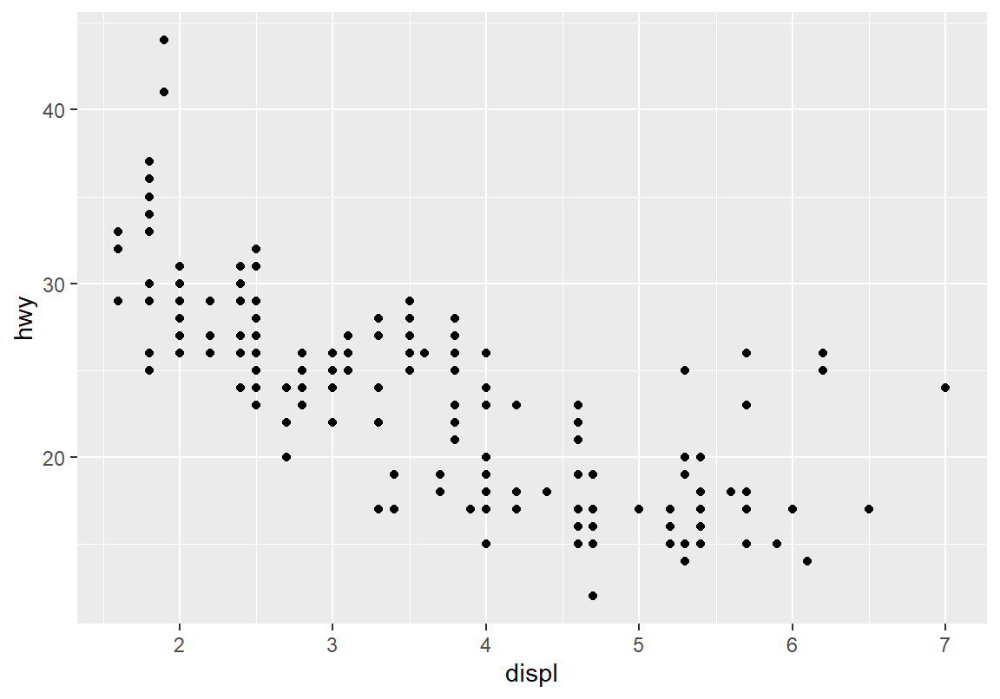
산점도에서 배기량이 커짐지면 연비가 줄어드는 경향을 관찰할 수 있다. 이 산점도를 그린 R 명령어는 두 개의 함수가 결합하여 실행되었다.
ggplot():ggplot2그래프의 좌표축과 좌표평면을 만드는 함수이다. 뒤에서 살펴보겠지만 그래프에 공통된 데이터와 매핑을 설정할 수 있다.geom_point():ggplot()함수가 만들어 놓은 좌표평면 위에, 점이라는 도형을 이용하여 그래프를 그린다. 각 geom 함수의 그래프는 좌표평면 상에서 별도의 층으로 구성된다.ggplot2의 명령문을 입력할 때 여러 함수를 합쳐서 실행하기 위하여+연산자를 이용한다.dplyr패키지의 파이프 연산자와 유사한 역할을 한다. 그러나 문법이 다르기 때문에ggplot2명령어 들 사이에는+연산자를 사용하여야 한다.
앞의 예에서는 geom_point() 함수의 data와 mapping이라는 인수를 설정하였다.
data: 도형으로 표현할 데이터 프레임을 지정한다.mapping: 도형의 시각적 속성과data에 지정된 데이터 프레임의 열을 쌍으로 대응시킨다.aes()함수 내에<도형의 속성>=<데이터 열 이름>의 형식으로 기술된다. 앞의 예에서 점의 x-축 위치에displ열이, y-축 위치에hwy열이 쌍으로 대응되었다.
ggplot2에는 점을 그리는 geom_point() 함수뿐 아니라 다양한 도형을 그리는 geom 함수들이 있다. 이 함수들은 모두 data와 mapping이라는 인수를 가지고 있다.
8.2 데이터의 열을 도형의 속성에 대응시키기 (aesthetic mapping)
앞의 산점도에서 배기량에 따라 연비가 줄어드는 관계를 조금 벗어나는 관측치들이 있다.
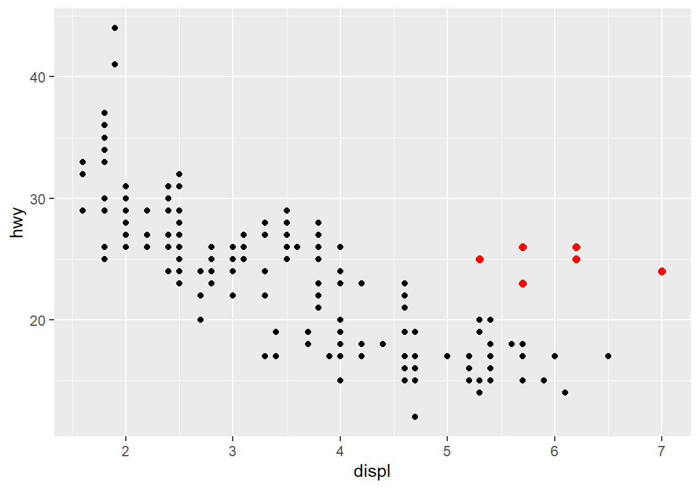
이 예외적인 관측치들이 자동차 종류의 차이 때문에 발생했다, 라고 가설을 세웠다 하자. 이 가설을 확인해 보려면 자동차 종류별로 관측치를 시각화할 필요가 있다. 앞서 본 geom_point() 함수는 ’점’이라는 도형을 좌표평면 상에서 그린다. 점이라는 도형은 x-축의 위치(x)와 y-축의 위치(y)뿐 아니라 색상(color), 모양(shape), 크기(size), 투명도(alpha) 등의 다른 시각적 속성을 가지고 있다. 우리는 이러한 속성 중 하나에 mpg 데이터의 class 열을 대응시켜 자동차 종류 별로 좌표평면에서 시각적으로 구분되는 점으로 표현할 수 있다.
8.2.1 색상(color) 속성
다음은 관측치의 종류(class)에 따라 점을 서로 다른 색상(color)으로 표현한 예이다. 자동차의 종류에 따라 점이 다른 색상으로 표현되고, 어떤 색상이 어떤 자동차 종류에 대응되었는지에 대한 범례가 자동 생성된다.
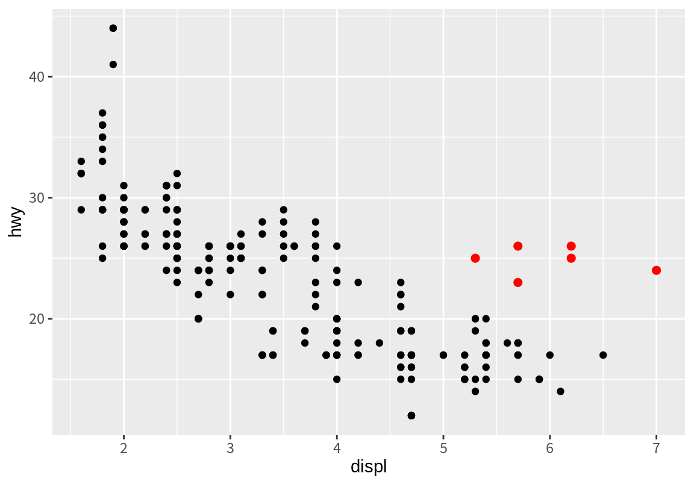
앞선 그래프에서 이상치로 표현되었던 점들 중 한 점만 제외하고 모두 2seater 자동차의 관측치였음을 알 수 있다. 이 종류의 차는 스포츠카로 배기량에 비해 가벼운 몸체를 가지고 있어 예외적인 연비가 관측된 것으로 보인다.
다음으로 class 열을 shape, size, alpha 등의 속성에 대응시켜 어떤 결과가 나오는지 살펴보자.
8.2.2 모양(shape) 속성
결과에서 보듯이 shape은 최대 6개의 점 모양으로만 구분하여 데이터를 표시하여 suv 데이터를 표시하지 못하였다.
Warning: The shape palette can deal with a maximum of 6 discrete values because
more than 6 becomes difficult to discriminate; you have 7. Consider
specifying shapes manually if you must have them.Warning: Removed 62 rows containing missing values (geom_point).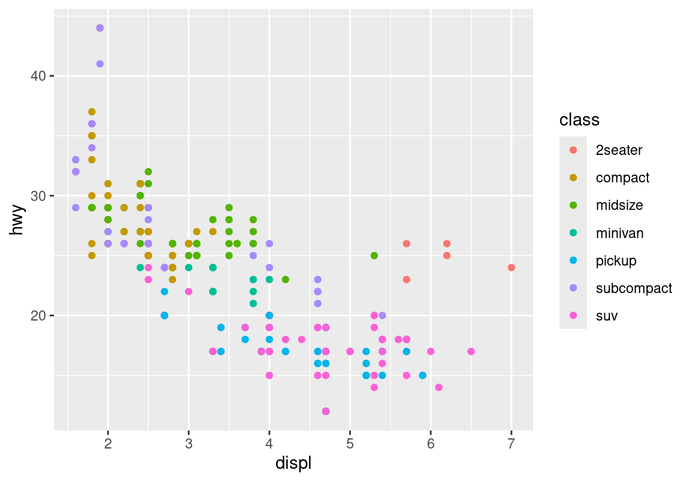
8.2.3 크기(size)와 투명도(alpha) 속성
size와 alpha는 모든 자동차 종류를 구분하여 표시를 해주지만 이산형 데이터를 표시하기에는 적절하지 않아서 관련된 경고 메시지를 표시한다. 왜냐하면 점의 크기와 투명도는 연속적인 값을 가지는 속성이기 때문이다.
Warning: Using size for a discrete variable is not advised.Warning: Using alpha for a discrete variable is not advised.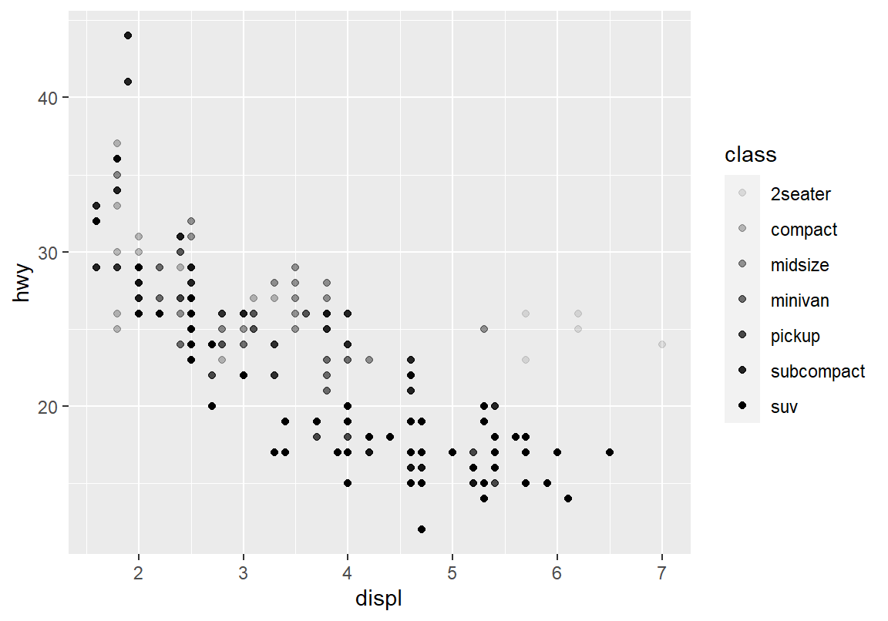
점의 크기와 투명도에 연속형 수치 변수인 도심연비(cty)를 대응시키면 경고 메시지가 나오지 않음을 볼 수 있다. 대체로 고속도로 연비가 좋은 차의 점의 크기가 크고, 더 진해지는 경향이 있음을 볼 수 있다.
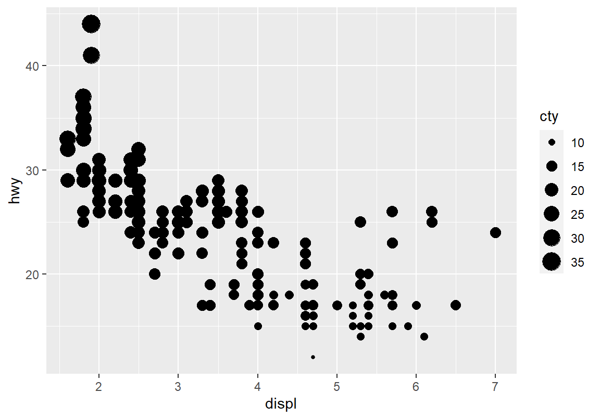
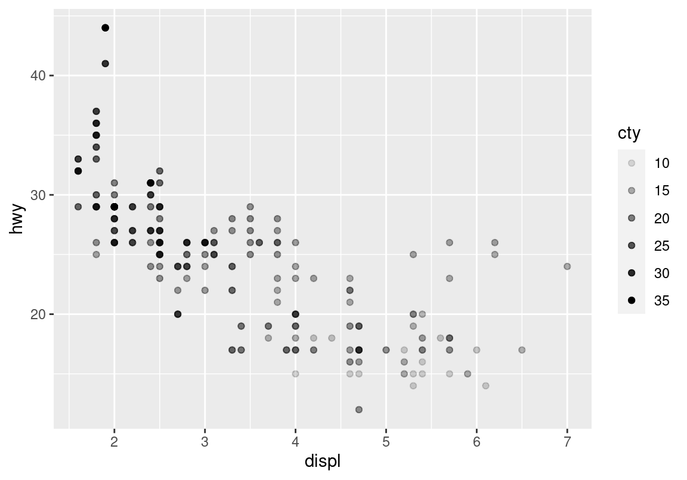
8.2.4 데이터의 한 열을 도형의 여러 속성에 대응시키기
데이터의 한 열을 도형의 여러 속성에 대응시킬 수도 있다. 다음 예에서는 구동방식(drv)에 따라 점의 모양과 색상을 다르게 표시하였다. 아울러 어떤 구동방식이 어떤 색상과 모양의 점으로 표현되었는지에 대한 범례도 자동 생성되었다.
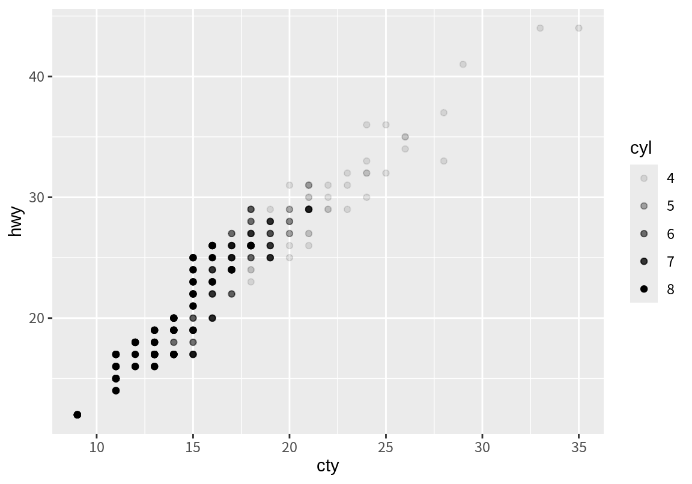
그래프에서 보듯이 예외적인 관측치를 구동방식의 차이로 설명하기는 어려워 보인다. 예외적인 관측치의 대부분이 후륜구동(r)이긴 하지만 주류적인 연비 경향 안에 포함되어 있는 후륜구동 관측치들도 많기 때문이다.
8.2.5 도형의 속성에 대응시키기 vs. 도형의 속성 인수를 설정하기
마지막으로 데이터를 도형의 속성으로 대응시키기와 도형의 속성 인수를 설정하기의 차이를 살펴보자.
8.2.5.1 도형의 속성 인수 설정하기
지금까지는 점의 속성에 데이터의 열을 대응시켜 관측치의 값에 따라 점이 시각적으로 다르게 표현되도록 하였다. 그런데 데이터와 무관하게 점의 속성을 특정한 값으로 설정할 수도 있다. 다음은 산점도 점을 모두 파란색으로 지정한 예이다.
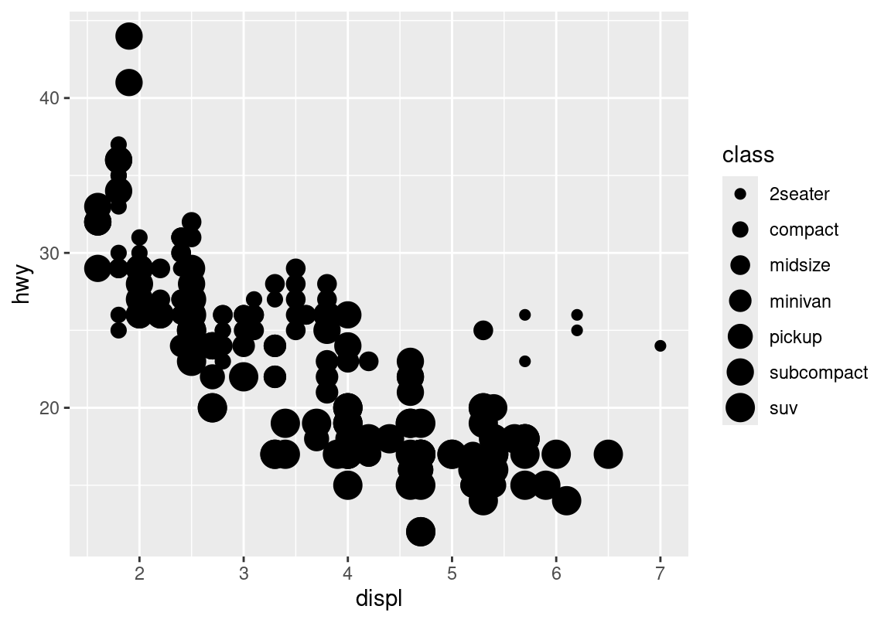
이처럼 도형의 어떤 속성을 특정한 값으로 지정하는 것을 도형의 속성 인수를 설정한다고 한다. 이 경우 도형의 시각적 속성의 변화는 데이터와는 무관하며, 그렇기 때문에 mapping 인수의 aes() 함수 내에 정의되지 않는다. 대신 aes() 바깥에 별도의 geom 함수의 인수로서 설정된다.
도형의 속성 인수를 설정할 때, 설정되는 값은 인수에 따라 다르다.
color인수: 색상의 이름이 문자열로 부여된다. 부여할 수 있는 생상의 이름을 확인하려면colors()함수를 실행해 본다.size인수: 점의 크기가 mm 단위로 설정된다.shape인수: 표시할 문자를 직접 설정할 수도 있고, 0에서 24까지의 숫자로도 지정할 수 있다. 다음은color="red"와fill="blue"로 인수가 설정되었을 때shape인수의 값에 따라 점의 모양을 보여준다.
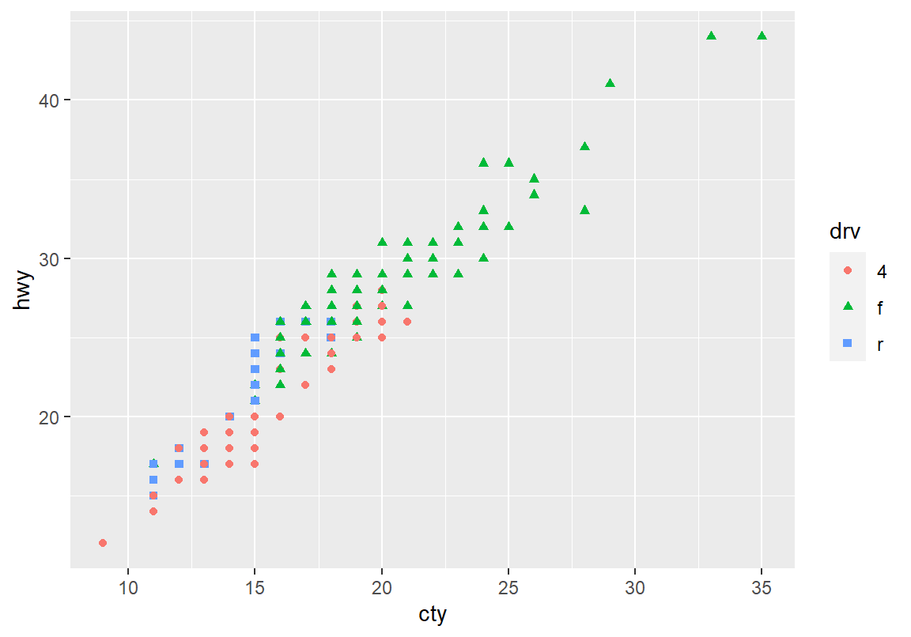
8.2.5.2 도형의 속성 인수를 속성 대응시키기에 잘못 설정하는 경우
ggplot2의 초보자가 가끔 도형의 속성을 데이터의 열에 대응시키기와 도형의 속성 인수를 설정하는 것을 혼동할 때가 있다. 다음처럼 color="blue"의 인수 설정을 aes() 안에 기술하면 어떻게 될까? 실제 이를 실행해 보면 점들이 파란색이 아니라 빨간색으로 표시되는 것을 볼 수 있다.
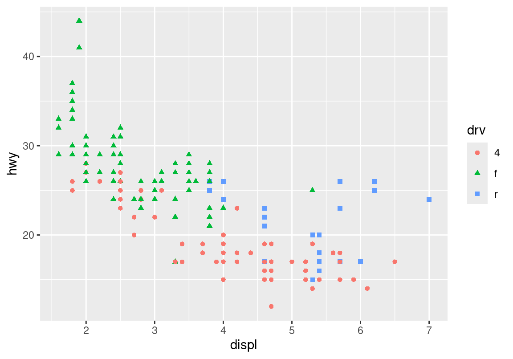
aes() 함수 안에 설정되었기 때문에 ggplot은 color="blue"를 color 속성에 “blue”라는 하나의 값을 가진 열이 대응된 것으로 간주한다. 그러므로 이 값에 적절한 색-이 예에서는 빨간색-을 대응시켜 점을 표시한 후, 범례에 blue라는 값이 빨간색으로 대응되었음을 표시하였다. 따라서 도형 속성을 데이터 열에 대응시키기와 도형의 속성 인수를 설정하는 것을 구분하여 사용하지 않으면 이렇듯 엉뚱한 결과를 얻을 수 있으므로 주의가 필요하다.
8.2.6 group 속성
geom 도형의 대부분의 속성은 도형의 시각적 표현을 직접적으로 변화시키는 속성들이다. 대표적인 예가 x, y, color, shape, size, fill 등의 속성이다. 이러한 속성은 시각적으로 효과가 직접적으로 들어나므로 이해하기 쉽다.
반면 group 속성은 도형의 시각적 속성을 직접 변형하는 것이 아니라, 도형을 그릴 때 데이터를 어떤 식으로 그룹으로 묶어 사용할지만 지정한다. 이를 통해 그래프의 전체 모양에 영향을 준다.
geom_point() 함수는 관측치 하나에 점 하나를 대응시켜 그래프를 그린다. 그러나 어떤 geom 함수는 여러 관측치를 그룹으로 묶어서 하나의 도형을 그린다. 대표적인 예가 geom_line()과 geom_smooth() 함수이다. 이 함수들은 여러 관측치를 사용하여 하나의 선을 완성한다. 만약 group 속성이 매핑되어 있지 않으면 모든 데이터를 하나의 그룹으로 하여 선 하나를 그린다. 반면 group 속성이 매핑되면, group속성에 매핑된 값을 기준으로 데이터를 그룹화하여 각각 도형 하나(geom_line()과 geom_smooth() 함수에서는 선 하나)를 그린다. 지금 설명한 내용을 예를 들어 살펴보자.
8.2.7 그룹으로 나누어 선 그래프 그리기
Orange 데이터는 5 그루의 나무에서 age(나이: 일)와 circumference(둘레: mm)을 측정한 결과이다. Tree 변수는 5그루 나무에 붙인 일련번호이다.
Tree age circumference
1 1 118 30
2 1 484 58
3 1 664 87
4 1 1004 115
5 1 1231 120
6 1 1372 142
7 1 1582 145
8 2 118 33
9 2 484 69
10 2 664 111
11 2 1004 156
......다음은 age와 circumference를 x와 y aesthetics에 매핑한 그래프이다.
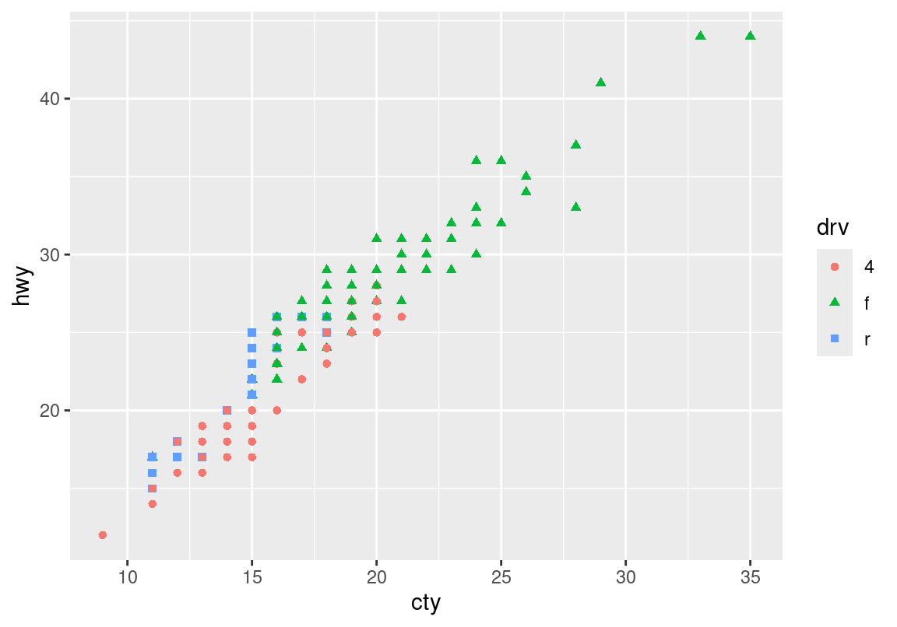
이번에는 위와 동일한 매핑으로 geom_line()을 그려보자. geom_line()은 x좌표가 작은 것에서 큰 것 순으로 점을 연결하여 하나의 선을 완성한다.
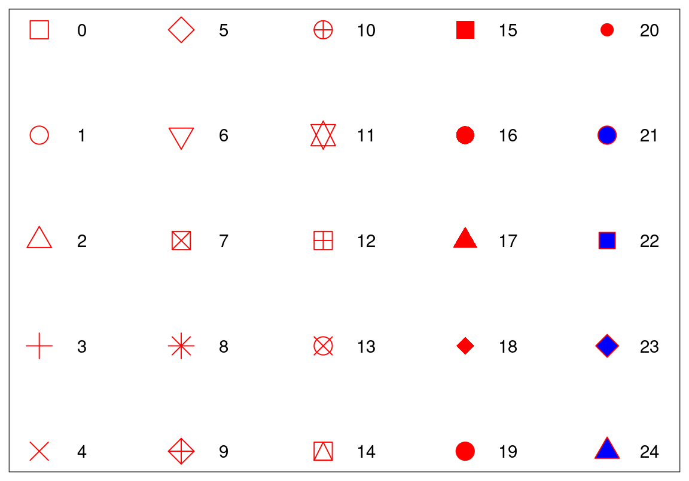
동일한 나이 대의 데이터가 많아서 하나의 선으로 연결한 그래프가 의미를 갖기 어려워 보인다. 이번에는 group 속성에 Tree 변수를 매핑해 보자. 데이터가 Tree의 값에 따라 그룹으로 묶여 선이 각각 그려졌음을 확인할 수 있다.
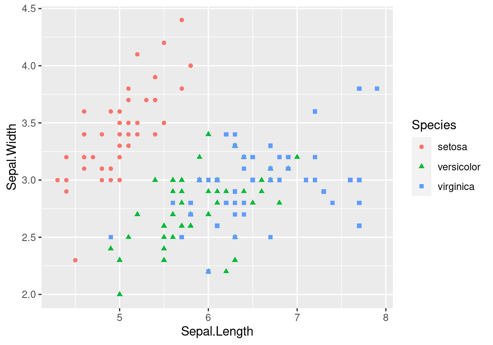
8.2.8 이산형 변수는 group 속성으로 자동 매핑된다.
각 나무의 데이터를 구분해 보기 위하여 다음처럼 color 속성을 추가해 보자. Tree 변수는 순서형 범주 데이터로 이산형 데이터이므로, color가 뚜렷이 구분되는 색으로 매핑되었다. 그리고 수준의 순서에 따라 범례도 정렬되었다.
[1] 1 1 1 1 1 1 1 2 2 2 2 2 2 2 3 3 3 3 3 3 3 4 4 4 4 4 4 4 5 5 5 5 5 5 5
Levels: 3 < 1 < 5 < 2 < 4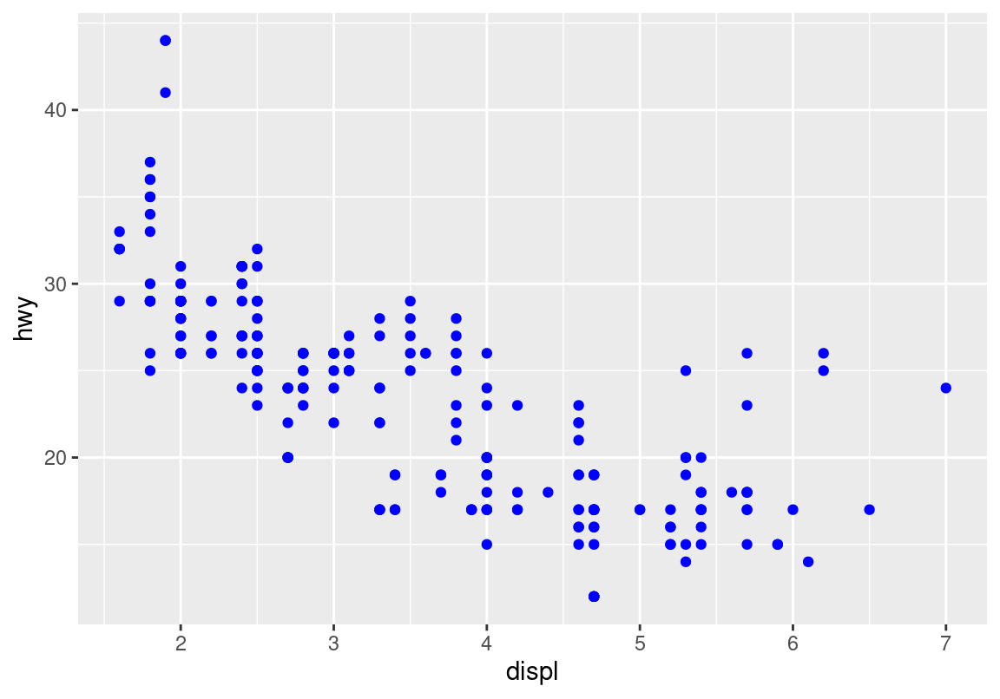
그런데 이를 좀 더 간편히 할 수 있는 방법이 있다. ggplot2는 속성에 매핑된 변수 중에 이산형 변수가 있으면 이를 group 속성에 자동으로 매핑시킨다. 다음처럼 color 속성에 Tree를 매핑만 하면, 자동으로 이를 group 속성에 반영하여 선을 구분하여 그려준다.
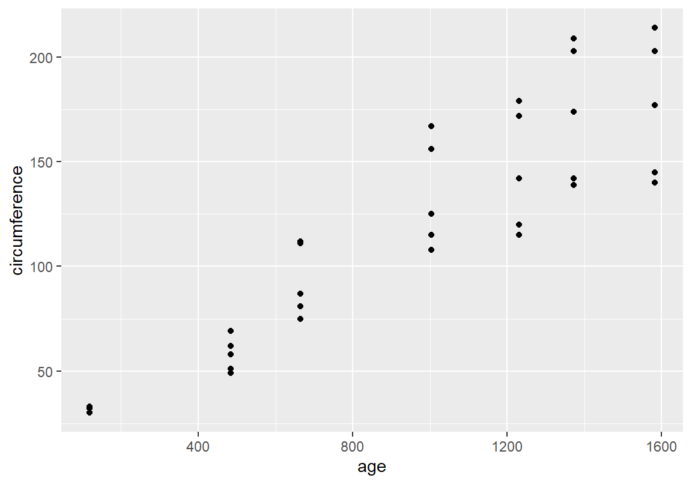
다음 예는 linetype 속성으로 각 나무를 구분한 예이다.
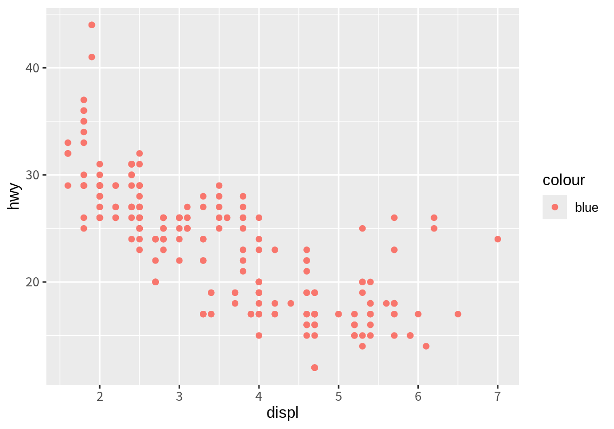
8.2.9 geom_smooth() 함수에서 group 속성
group 속성이 이용되는 또 다른 예가 geom_smmooth() 함수이다. 이 함수는 group에 매핑된 정보에 따라 데이터를 그룹화하여 추세선을 그린다.
`geom_smooth()` using method = 'loess' and formula 'y ~ x'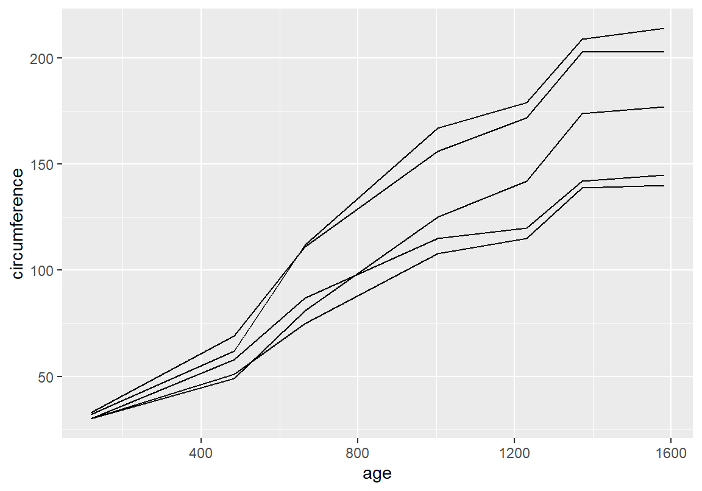
`geom_smooth()` using method = 'loess' and formula 'y ~ x'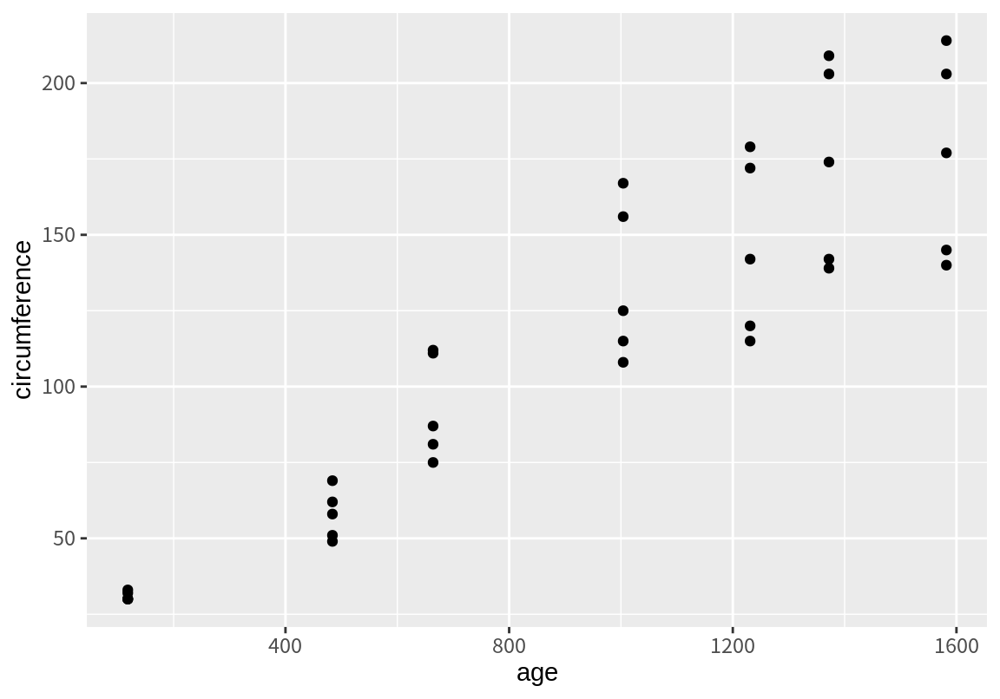
`geom_smooth()` using method = 'loess' and formula 'y ~ x'마지막 예에서는 geom_smooth() 함수의 se 인수를 FALSE로 설정하여 신뢰구간이 표시되지 않도록 하였다.
8.3 ggplot 명령문을 입력할 때 자주 발생하는 문제들
ggplot은 매우 강력한 기능을 가지고 있지만 Excel 등의 GUI 프로그램에만 익숙한 사람은 문자 기반 명령어를 입력하는 것에 어려움을 느낄 수 있다. 컴퓨터는 사람만큼의 유연성을 발휘하지 못하므로 컴퓨터는 자신이 실행해야 할 명령문의 문법에 매우 까다롭게 반응한다. ggplot 명령어 입력시 흔히 발생하는 문제들은 다음과 같다.
- R 명령문은 대소문자를 구분한다. 따라서
Color와color는 ggplot에서 서로 다른 인수로 인식되어 오류가 발생한다. - ggplot 명령문의 키워드의 철자가 틀리면 다른 키워드로 간주하기 때문에 오류가 발생할 수 있다. 이를 방지하려면 키워드의 일부만 입력한 후
Tab키를 눌러 자동완성 기능을 사용하여 입력하는 것을 권장한다. ggplot2의 명령문을 입력할 때 여러 함수를 합쳐서 실행하기 위하여+연산자를 이용한다.7ggplot2의 명령문이 길어지면 명령문을 여러 줄로 쓰는 것이 필요한데, 보통+로 연결되는 곳에서 줄바꿈하는 것이 읽기에 좋다. 이 때 주의할 점이, 줄바꿈을+앞이 아니라 뒤에서 해야 한다는 것이다.+앞에서 하면 R은 명령문의 입력이 완성된 것으로 간주하기 때문이다.- R 명령문이 조금 길어지면 가장 흔하게 발생하는 실수가
( )와" "을 짝을 맞추어 제대로 입력하지 못하는 것이다.ggplot2의 명령문도 많은 함수를 사용하다 보니 이를 주의하여야 한다. R 콘솔은 명령이 계속 입력 중이라고 생각하여>가 아니라+를 콘솔의 프롬프트로 표시한다. 이 경우 가장 간단한 해결책은Esc키를 눌러 명령 입력에서 빠져나와 다시 명령문을 입력하는 것이다.
8.4 측면(facets)으로 나누어 그리기
8.2 장에서 배기량과 고속도로 연비의 산점도를 자동차 종류에 따라 분리하여 살펴보기 위해 점의 시각적 속성 중 하나에 자동차 종류를 대응시켰다. 원래의 그래프를 또 다른 변수의 측면에서 세분화하여 살펴보는 방법으로는 도형의 다른 속성에 해당 변수를 대응시키는 것 말고도 해당 변수값에 따라 데이터를 나누어 각각에 대한 그래프를 그려볼 수도 있다. ggplot2에서는 이러한 방식으로 그래프를 그리는 것을 측면(facets)으로 나누어 그래프를 그린다고 한다.
8.4.1 facet_wrap()로 일차원 측면 그래프 그리기
다음은 facet_wrap() 함수의 사용법을 보여준다. ~ 은 R에서 수식을 표현할 때 사용되는데, facet_wrap() 함수는 수식을 인수로 입력받는다. facet_wrap() 함수는 ~ 우변에 기술된 변수를 측면(facets)으로 하여 데이터를 나누어 그래프를 그린다. 이 때 측면(facets)으로 사용되는 변수는 범주형 데이터이어야 한다. facet_wrap()은 부분 그래프가 많아지면 줄바꿈하여 그래프를 표시한다. ncol이나 ncol을 설정하면 그래프의 행과 열의 수를 지정하여 줄바꿈 처리를 제어할 수 있다.
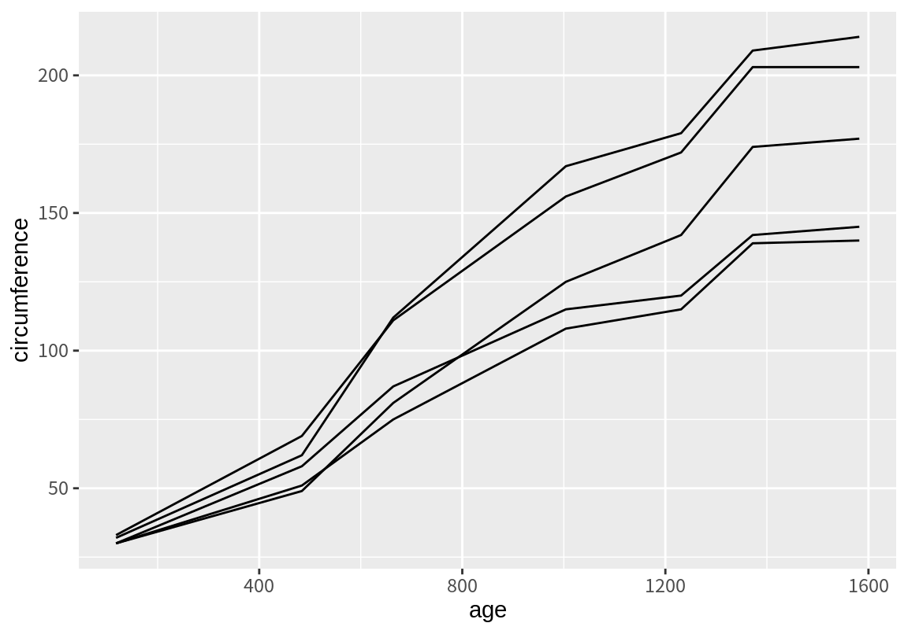
두 개 이상의 변수를 조합하여 측면을 만드려면 다음처럼 수식의 우변에 두 개의 변수를 +로 연결하여 기술하면 된다.
> ggplot() + geom_point(mapping=aes(x=displ, y=hwy), data=mpg) +
+ facet_wrap(~drv + year, nrow = 2)
8.4.2 facet_grid()로 이차원 측면 그래프 그리기
원래 그래프를 두 변수의 측면에서 나누어 그리기를 하려면 facet_grid()를 사용하는 것이 좋다.
facet_grid()도 수식은 인수로 입력 받는데, 수식의 좌변과 우변에 데이터의 변수를 지정할 수 있다.
그러면 수식의 좌변에 기술된 변수를 그래프의 행으로, 우변에 기술된 변수를 그래프의 열로 하여 측면 그래프를 그린다.
facet_wrap() 함수와 마찬가지로 수식의 좌변과 우변에 +로 하나 이상의 변수를 지정할 수 있다.
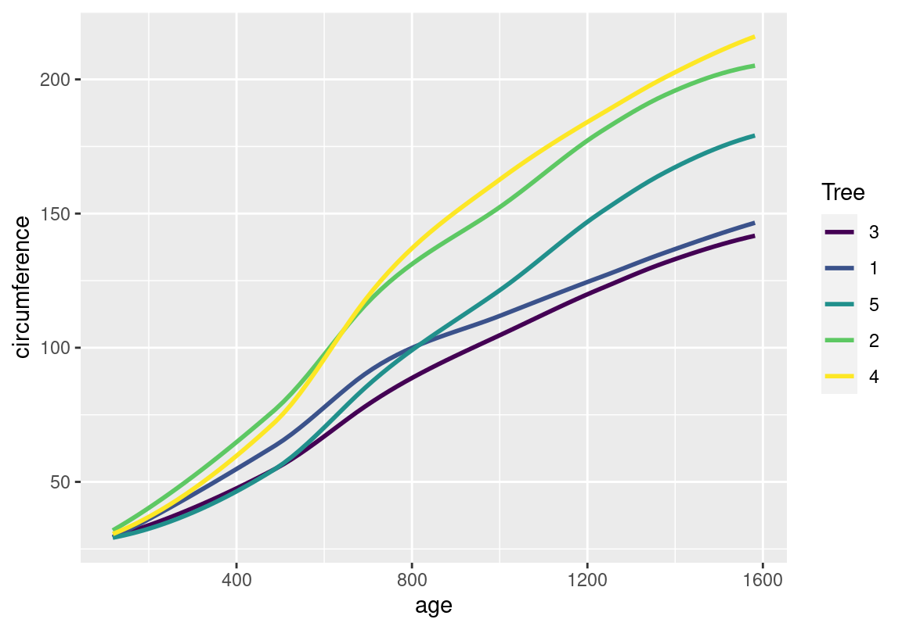
8.5 그래프 계층(layers)과 도형(geoms)
ggplot2의 장점은 필요에 따라 다양한 형식의 그래프를 쉽게 만들 수 있고, 만들 수 있는 형식도 무궁무진하다는데 있다. 그리고 ggplot2 그래프의 계층적 구조가 이러한 무궁무진한 그래프 형식을 만들어 내는 핵심 요소라 할 수 있다.
8.5.1 geom 함수의 순서와 그래프 계층
ggplot2는 좌표평면 위에 여러 계층으로 그래프를 그려서 하나의 좌표평명에 나타냄으로써 복잡한 형식의 그래프를 만들어 낼 수 있다.
다음 두 그래프에서는 배기량과 고속도로 연비의 산점도와 추세선을 각각 그렸다.
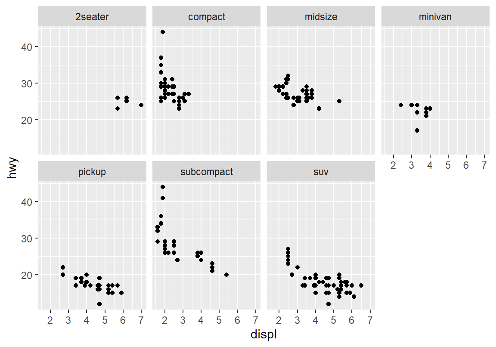
`geom_smooth()` using method = 'loess' and formula 'y ~ x'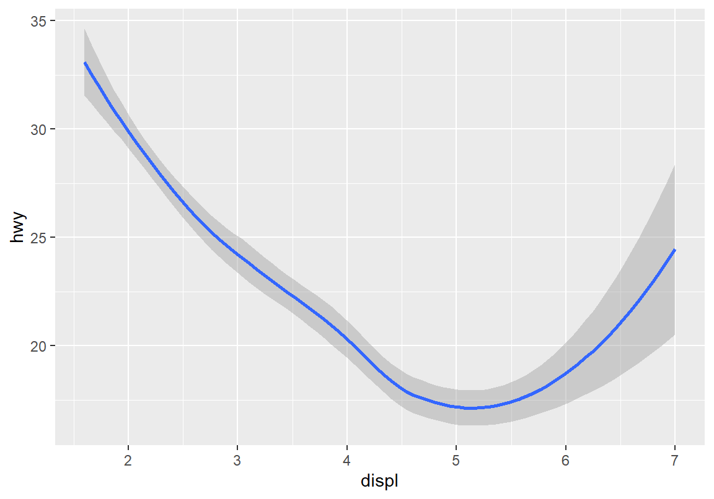
위의 두 그래프는 다음처럼 한 좌표평면 위에 겹쳐서 그릴 수 있다. ggplot2에서 서로 다른 geom 함수는 서로 다른 도형-앞의 예는 점과 추세선-을 그래프에 표시한다.
ggplot() 함수가 여러 개의 geom 함수와 연결되면, 하나의 좌표평면에 각각의 geom() 함수의 결과를 층층이 그린다. 이 때, 명령문에 나타나는 순서에 따라 첫번째 나온 geom 함수의 도형이 가장 아래 계층에, 다음에 나오는 geom 함수의 도형이 차례로 그 윗 계층에 그려진다.
> ggplot() +
+ geom_point(mapping=aes(x=displ, y=hwy), data=mpg) +
+ geom_smooth(mapping=aes(x=displ, y=hwy), data=mpg)`geom_smooth()` using method = 'loess' and formula 'y ~ x'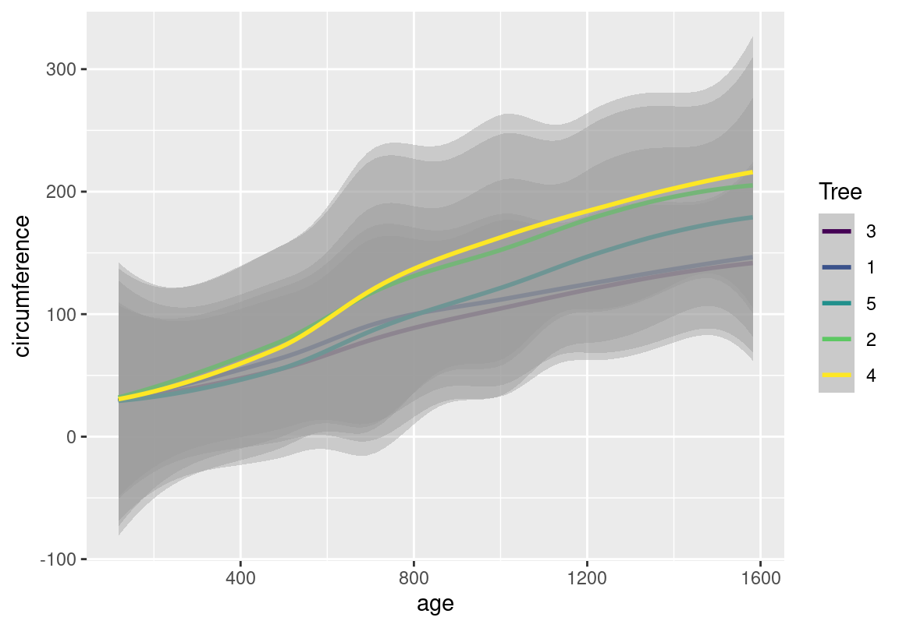
8.5.2 ggplot() 함수는 좌표축을 자동 조정한다.
만약 위의 그래프에 배기량과 도심연비의 산점도와 추세선을 겹쳐서 표시하려면 다음처럼 네 계층으로 이루어진 그래프를 그린다. ggplot() 함수가 데이터에 따라 좌표평면의 범위를 자동적으로 조정하는 것을 볼 수 있다.
> ggplot() +
+ geom_point(mapping=aes(x=displ, y=hwy), data=mpg) +
+ geom_smooth(mapping=aes(x=displ, y=hwy), data=mpg) +
+ geom_point(mapping=aes(x=displ, y=cty), data=mpg, col="red", shape=1) +
+ geom_smooth(mapping=aes(x=displ, y=cty), data=mpg, linetype=2, col="red")`geom_smooth()` using method = 'loess' and formula 'y ~ x'
`geom_smooth()` using method = 'loess' and formula 'y ~ x'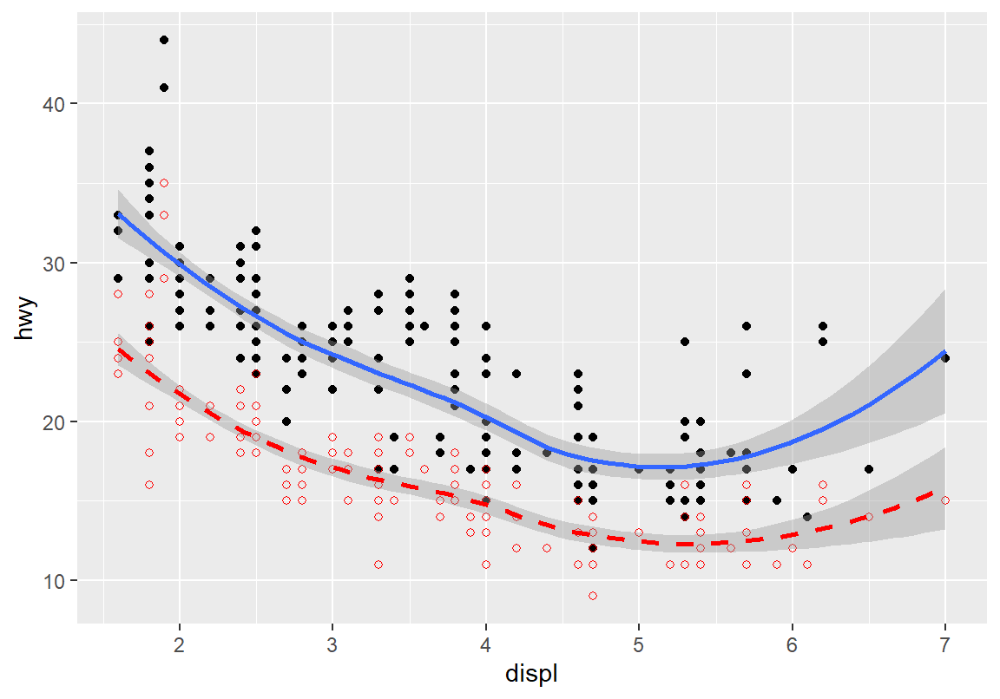
8.5.3 여러 데이터를 사용하여 그래프 계층 만들기
지금까지는 동일한 데이터(data)에 대해서 geom 함수들이 그래프를 그렸다. 그러나 사실 각 계층의 geom 함수가 이용할 data와 mapping을 독립적으로 설정할 수 있다.
다음 예는 mpg 데이터와 함께 R의 기본 패키지에서 제공하는 iris 데이터를 사용하여 그래프를 그려보자.
Sepal.Length Sepal.Width Petal.Length Petal.Width Species
1 5.1 3.5 1.4 0.2 setosa
2 4.9 3.0 1.4 0.2 setosa
3 4.7 3.2 1.3 0.2 setosa
4 4.6 3.1 1.5 0.2 setosa
5 5.0 3.6 1.4 0.2 setosa
6 5.4 3.9 1.7 0.4 setosairis 데이터는 꽃받침의 길이(‘Sepal.Length’)와 폭(‘Sepal.Width’) 열을 가지고 있는데, 이 두 열의 산점도를 앞의 그래프에 겹쳐서 그려보았다.
> ggplot() +
+ geom_point(mapping=aes(x=displ, y=hwy), data=mpg) +
+ geom_smooth(mapping=aes(x=displ, y=hwy), data=mpg) +
+ geom_point(mapping=aes(x=displ, y=cty), data=mpg, col="red", shape=1) +
+ geom_smooth(mapping=aes(x=displ, y=cty), data=mpg, linetype=2, col="red") +
+ geom_point(mapping=aes(x=Sepal.Length, y=Sepal.Width), data=iris, col="orange") `geom_smooth()` using method = 'loess' and formula 'y ~ x'
`geom_smooth()` using method = 'loess' and formula 'y ~ x'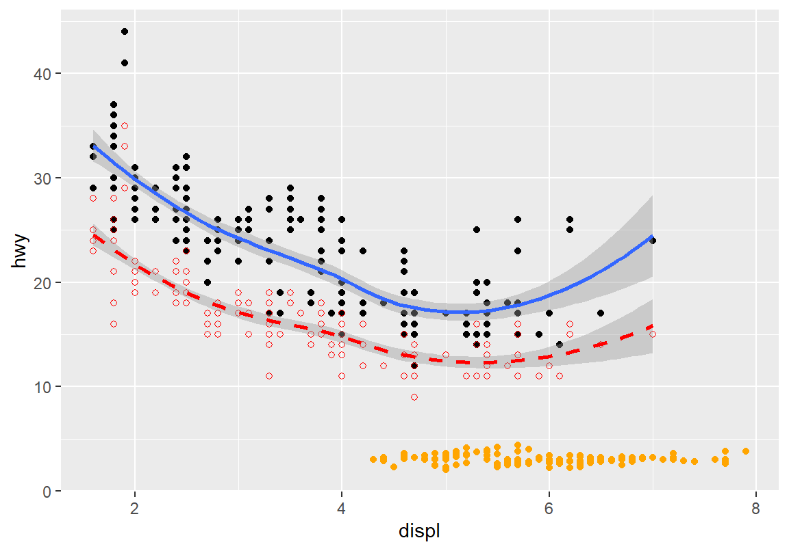
물론 이 그래프는 배기량과 꽃받침의 길이를 같은 x-축으로, 고속도로 연비와 꽃받침의 폭을 같은 y-축으로 그래프를 그렸으므로 억지스러운 측면이 있다. 단지 아주 별개의 데이터를 동시에 사용해서 하나의 그래프를 그릴 수 있다는 것을 보여주기 위해 그린 그래프일 뿐이다.
그러나 이 예에서 다음 사실을 확인할 수 있다.
첫째, 서로 다른 데이터를 사용해도 좌표평면이 자동으로 조정되어 모든 계층의 도형이 모두 적절히 표시된다.
둘째, 아울러 축의 이름은 첫 계층의 geom 함수의 x와 y로 대응된 변수가 자동으로 선택된다. 뒤에서 보겠지만 labs() 함수 등을 사용하면 축의 이름을 자유롭게 변경할 수 있다.
8.5.4 다른 데이터 범위로 그래프 계층 만들기
8.2 절을 시작할 때, 주경향에서 벗어난 점들을 더 큰 빨간색 점으로 표현한 그래프를 보았을 것이다. 이 그래프는 어떻게 그렸을까? 답은 7.4 절에서 설명한 filter() 함수를 이용하여 예외적인 경향의 데이터만 뽑아낸 후, 이 데이터를 가지고 별도의 산점도를 그리는 것이다. 이 데이터를 이용해서 그린 산점도가 마지막 그래프 계층에 그려졌으므로 빨간 점이 원래의 검은 점 위에 그려진다. (8.2 절에 그래프가 있으니 여기서는 결과는 생략한다.)
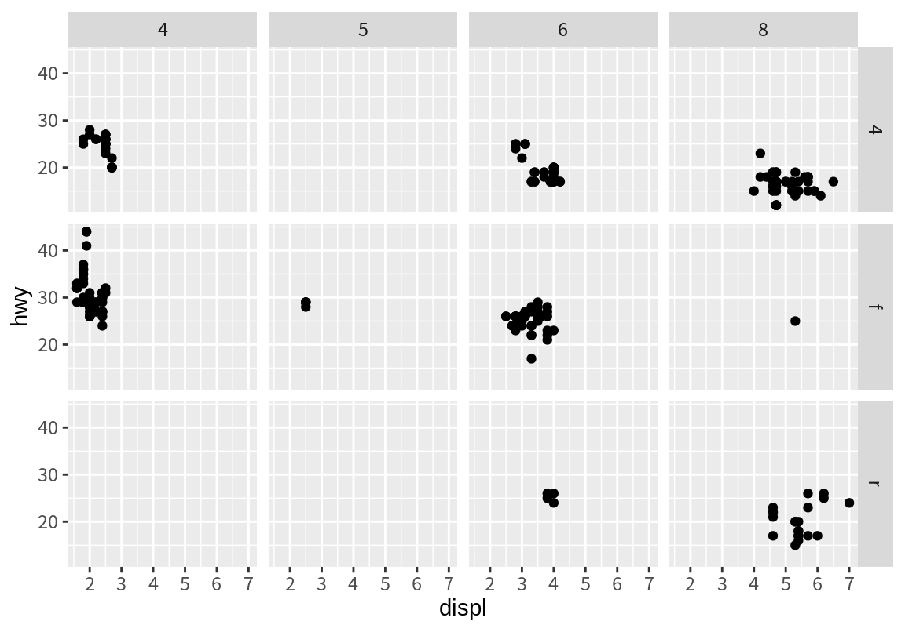
8.5.5 공통 data와 mapping의 설정
지금까지 geom 함수에 data와 mapping 인수를 각각 설정하였다. 그런데 공통된 data와 mapping을 사용하여 여러 층으로 그래프를 겹쳐 그리는 경우, 이러한 방식으로 data와 mapping을 일일이 설정하는 것은 귀찮을 뿐 아니라 명령문의 오류 가능성을 증가시키고 변경을 어렵게 만든다.
8.5.5.1 ggplot() 함수에 공통 데이터와 매핑 설정하기
ggplot() 함수는 좌표평면을 생성하는 기능뿐 아니라, 그래프 계층에 공통된 data와 mapping을 설정하는 기능도 가지고 있다. 다음 예에서는 배기량과 고속도로 연비의 산점도와 추세선을 공통된 data와 mapping 설정을 이용하여 그렸다. 주의할 점은 data와 mapping 인수의 위치가 geom 함수와 ggplot() 함수에서 반대라는 것이다.
`geom_smooth()` using method = 'loess' and formula 'y ~ x'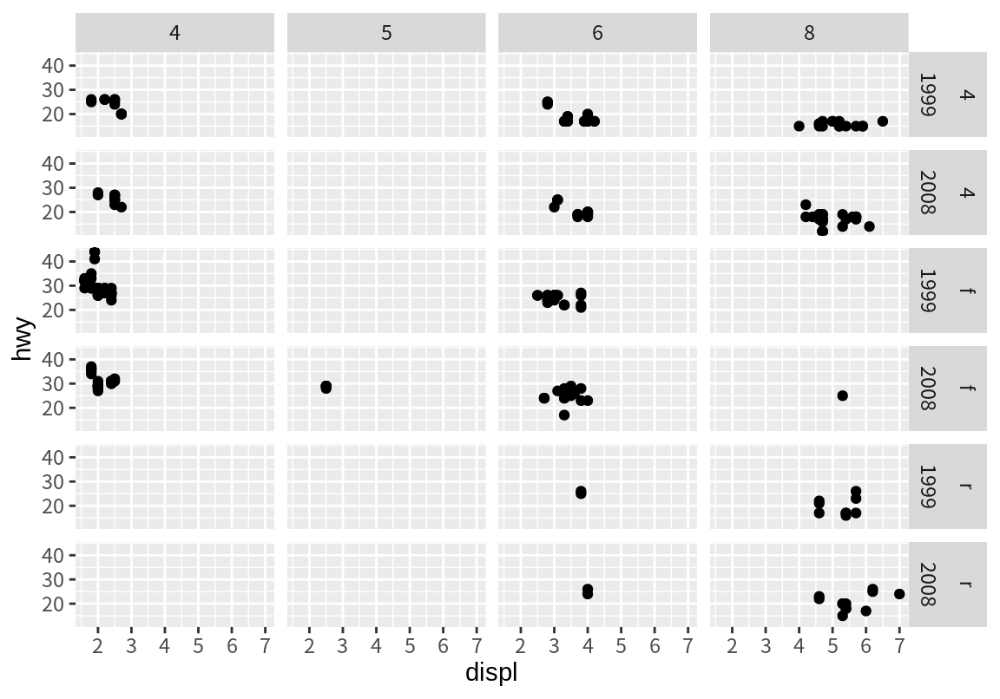
위와 같은 형식으로 명령문을 구성하면, 다음처럼 한 군데만 변경하면 고속도로 연비가 아니라 도심 연비로 산점도와 추세선을 그릴 수 있어 편리하다. (그래프는 지면 제한으로 생략하였다.)
8.5.5.2 geom 함수에서 데이터와 매핑의 재정의
ggplot() 함수에 data와 mapping 인수가 정의되어 있어도, geom 함수에 이를 재지정할 수 있다. 이 경우 각 geom 함수에서 사용하는 data와 mapping은 다음 규칙에 의해 결정된다.
- geom 함수는
ggplot()함수에 설정된data와mapping을 상속받아 그래프를 그린다. - 만약 geom 함수에
data인수가 설정되면ggplot()함수에 설정된data는 무시된다. - 만약 geom 함수에
mapping인수가 설정되면ggplot()함수에 설정된mapping에 geom 함수에 설정된mapping이 추가된다. 만약 동일한 도형 속성에 대한 정의가 두 군데 나타나면 geom 함수의 설정이 사용된다.
따라서 배기량과 고속도로 연비의 산점도와 추세선에 배기량과 도심 연비의 추세선을 더한 그래프는 다음 명령으로도 그릴 수 있다. (그래프는 지면 제한으로 생략되었다.)
8.5.5.3 ggplot()과 geom 함수에서 대표 인수의 이름을 생략하기
지금까지 공통 데이터와 매핑을 ggplot() 함수에 기술하여 명령문을 단순화하였다. 그런데 이 명령문들은 더 단순화할 수 있다.
R 함수에서 인수를 인수의 순서대로 입력하는 경우에는 인수의 이름을 굳이 표시하지 않아도 된다. ggplot() 함수의 처음 두 인수는 차례로 data와 mapping이고 모든 geom 함수의 처음 두 인수는 차레로 mapping과 data이다. 또한 aes() 함수의 처음 두 인수는 x와 y이다. 따라서 이 정보를 사용하면 위 명령어는 다음처럼 단순해 진다. 주의할 점은 마지막 점과 추세선 geom 함수의 aes() 함수에서는 y만 나오므로 인수 이름을 사용하였다.
> ggplot(mpg, aes(displ, hwy)) +
+ geom_point() + geom_smooth() +
+ geom_point(aes(y=cty), col="red", shape=1) +
+ geom_smooth(aes(y=cty), linetype=2, col="red")아울러 다음 세 그래프를 비교해 보자. 첫 번째 그래프에서는 배기량과 고속도로 연비의 산점도와 추세선를 구동방식(drv)에 따라 다른 색으로 표현하였다. 두 번째 그래프는 점은 구동방식에 따라 다른 색으로 표현하였지만 추세선은 모든 데이터에 대하여 하나만 그려지도록 하였다. 세 번째 그래프는 두 번째 그래프에서 추세선을 자동차 종류가 subcompact인 데이터에 대해서만 그려지도록 하였다. 이를 위해 뒤에서 설명할 filter 함수를 이용하여 mpg 데이터에서 class 변수가 subcompact인 관측치만 선택하여 새로운 데이터를 만들어 geom_smooth() 함수의 data 인수에 사용하였다. 세 그래프의 차이를 비교해 보라.
`geom_smooth()` using method = 'loess' and formula 'y ~ x'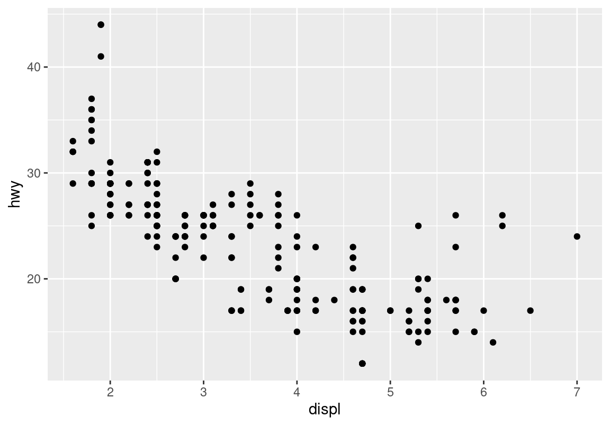
`geom_smooth()` using method = 'loess' and formula 'y ~ x'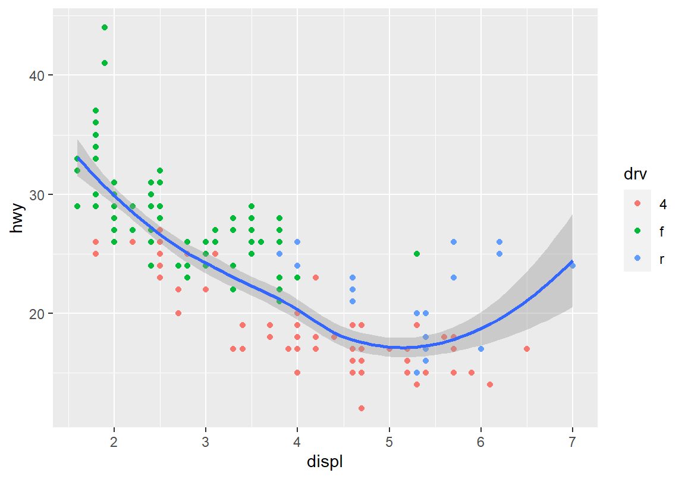
> ggplot(mpg, aes(displ, hwy)) + geom_point(aes(col=drv)) +
+ geom_smooth(data=filter(mpg, class=="subcompact"))`geom_smooth()` using method = 'loess' and formula 'y ~ x'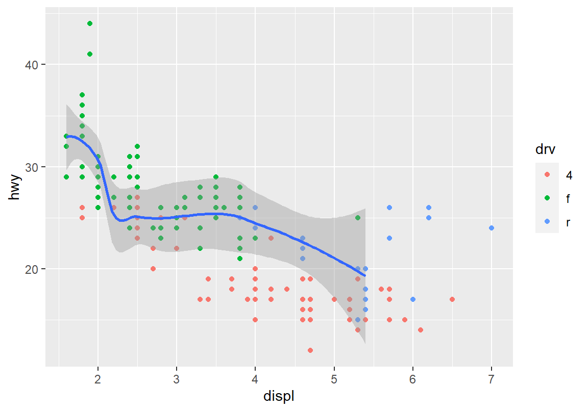
8.6 통계 변환
8.6.1 범주형 변수의 통계 요약
ggplot2 패키지의 diamonds는 약 54,000개의 다이아몬드에 대한 다음 정보를 측정한 데이터이다.
caret: 다이아 몬드 무게cut: 가공의 품질. Fair, Good, Very Good, Premium, Idealcolor: 색상. D(최상)에서 F(최하)까지clarity: 투명도. I1(최하), SI2, SI1, VS2, VS1, VVS2, VVS1, IF(최상)x,y,z: 길이, 폭, 깊이depth: 깊이 비율 =z / mean(x, y)table: 최대폭 대비 윗면의 폭의 길이 비율
# A tibble: 53,940 x 10
carat cut color clarity depth table price x y z
<dbl> <ord> <ord> <ord> <dbl> <dbl> <int> <dbl> <dbl> <dbl>
1 0.23 Ideal E SI2 61.5 55 326 3.95 3.98 2.43
2 0.21 Premium E SI1 59.8 61 326 3.89 3.84 2.31
3 0.23 Good E VS1 56.9 65 327 4.05 4.07 2.31
4 0.290 Premium I VS2 62.4 58 334 4.2 4.23 2.63
5 0.31 Good J SI2 63.3 58 335 4.34 4.35 2.75
6 0.24 Very Good J VVS2 62.8 57 336 3.94 3.96 2.48
7 0.24 Very Good I VVS1 62.3 57 336 3.95 3.98 2.47
8 0.26 Very Good H SI1 61.9 55 337 4.07 4.11 2.53
9 0.22 Fair E VS2 65.1 61 337 3.87 3.78 2.49
10 0.23 Very Good H VS1 59.4 61 338 4 4.05 2.39
# ... with 53,930 more rows다이아몬드의 가공의 품질(cut) 수준에 따른 빈도를 시각화해 보자. 현재 cut의 수준별 빈도수에 대한 데이터가 없기 때문에 먼저 이 데이터를 구하기 위한 통계적 변환을 수행해야 한다. 이를 위해 뒤에 설명할 dplyr 패키지의 summarize() 함수를 이용하였다.
`summarise()` ungrouping output (override with `.groups` argument)# A tibble: 5 x 2
cut n
<ord> <int>
1 Fair 1610
2 Good 4906
3 Very Good 12082
4 Premium 13791
5 Ideal 21551그리고 geom_col() 함수를 이용하여 막대 그래프를 그린다. geom_col() 함수는 막대라는 도형을 그리는 geom 함수로 x 값의 위치에 y에 매핑된 값을 높이로 가지는 막대를 그린다.
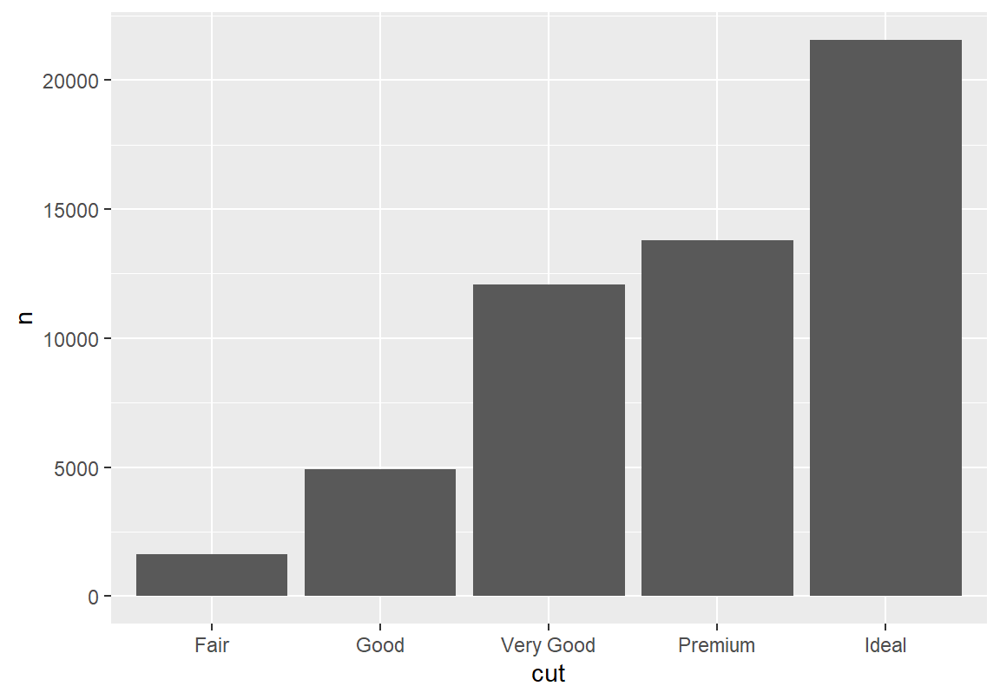
그런데 geom 함수의 stat 인수를 이용하면 원래 데이터를 통계 요약하여 그래프를 그리는 과정을 사용자의 개입없이 쉽게 수행할 수 있다.
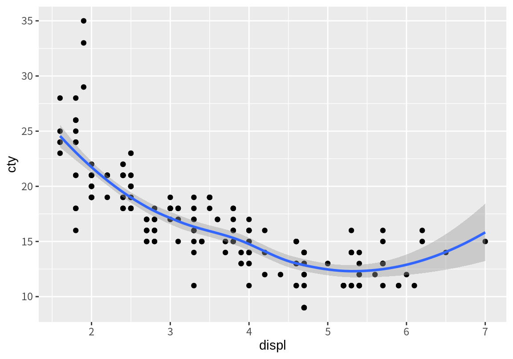
그림 8.1는 geom_bar() 함수에서 stat 인수가 어떻게 작동하는지를 보여준다. geom_bar() 함수는 stat 인수에 "count"가 설정되면 stat_count() 함수를 사용하여 원래 데이터를 통계 요약한다. stat_count()는 x에 맵핑된 열을 수준(level; 구분되는 값) 별로 절대적 빈도와 상대적 빈도를 계산하여 count와 prop라는 열을 가지는 요약 데이터를 만든다.
그리고 이 요약 데이터를 이용하여 x-축에 원래 변수의 수준을, y-축에 count 변수를 맵핑하여 막대 그래프를 그린다.

Figure 8.1: stat의 작동 방식 (출처: R for Data Science)
사실 geom_bar() 함수의 디폴트 stat는 "count"이기 때문에, stat를 생략하여도 같은 결과를 얻을 수 있다.
stat_count()가 요약한 데이터에서 절대 빈도수 count가 아니라 상대 빈도수 prop을 사용하여 그래프를 그리려면 y=..prop..을 mapping에 추가하여야 한다. stat가 생성한 요약 데이터의 열을 지정할 때는 ..<요약 변수 이름>.. 형식으로 지정을 한다. 그래야 원래 데이터가 아니라 요약 데이터에서 해당 열을 찾아 매핑을 한다. 상대 빈도는 group 속성에 따라 계산을 하는데, 전체 데이터를 대상으로 상대 빈도를 구하기 위해 모든 데이터가 동일한 그룹이 되도록 group=1로 설정을 하였다.8
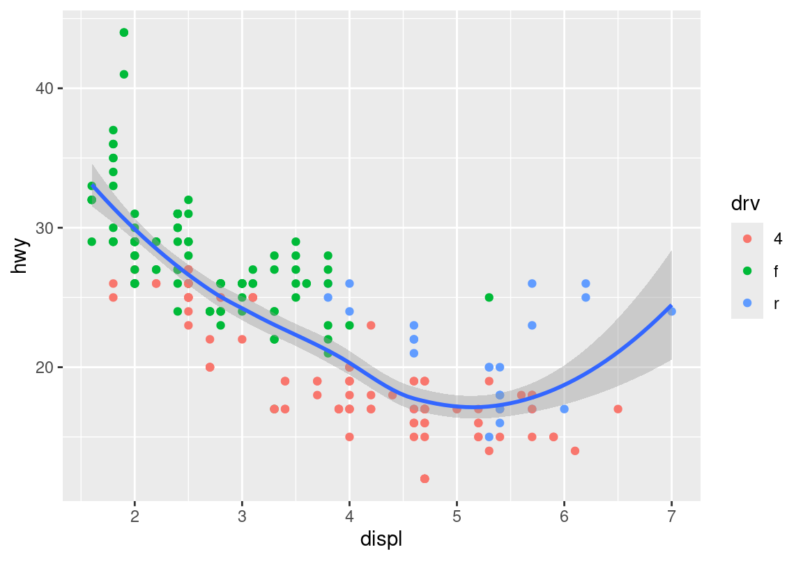
8.6.2 수치형 변수의 통계 요약
carat 같은 연속형 변수에 geom_bar()를 적용하면 구별되는 모든 수치에 대해 빈도를 계산하여 막대를 그린다. 그러나 연속형 변수는 구별되는 값이 매우 많으므로 이렇게 만들어진 그래프로 데이터의 경향을 파악하긴 어렵다.
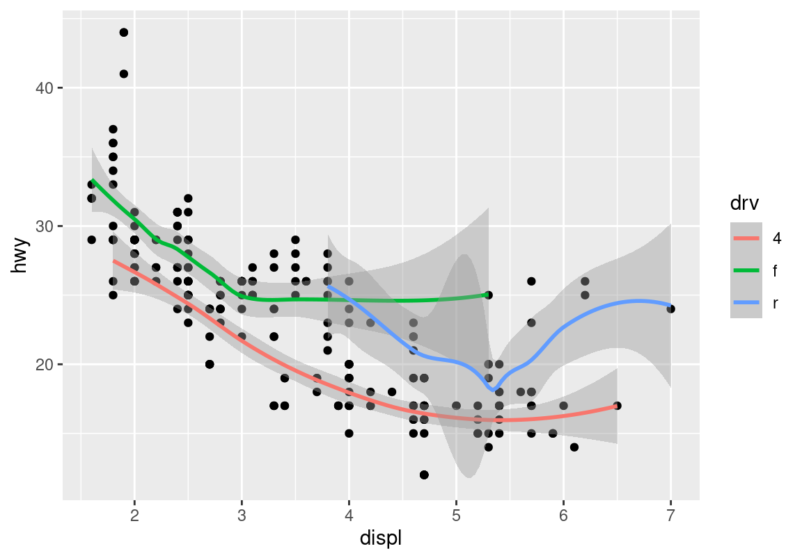
8.6.2.1 stat_bin()을 이용한 히스토그램
연속형 변수는 구분되는 값이 아니라 일정한 구간 별로 빈도를 계산하여 막대 그래프를 그리는 것이 더 적절하다. (이러한 그래프를 히스토그램이라고 한다.) stat 인수에 stat_bin()을 사용하면 x에 맵핑된 연속형 변수의 값을 구간으로 나누어 이러한 작업을 한다.
`stat_bin()` using `bins = 30`. Pick better value with `binwidth`.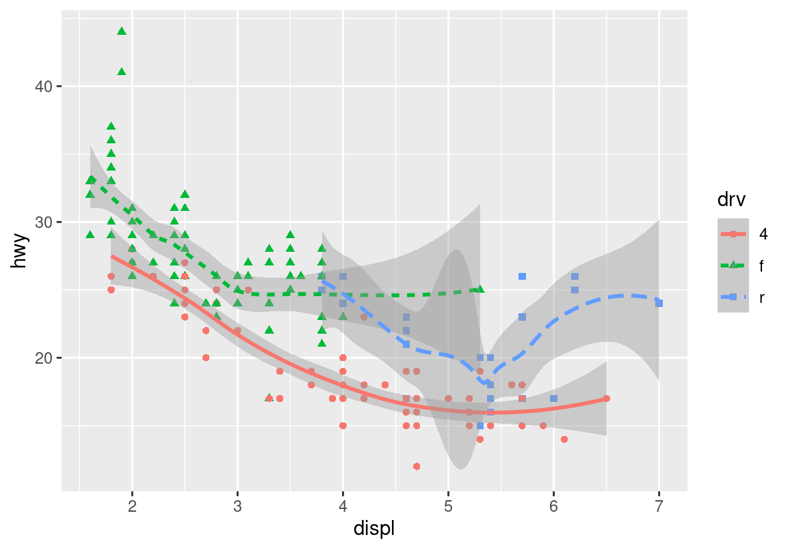
8.6.2.2 geom_histogram()
사실 stat_bin()을 디폴트 stat로 사용하는 geom 함수가 있다. geom_histogram()이 그 함수이다. geom_histogram()를 이용하면 다음처럼 연속형 변수에 대한 히스토그램을 그릴 수 있다.
`stat_bin()` using `bins = 30`. Pick better value with `binwidth`.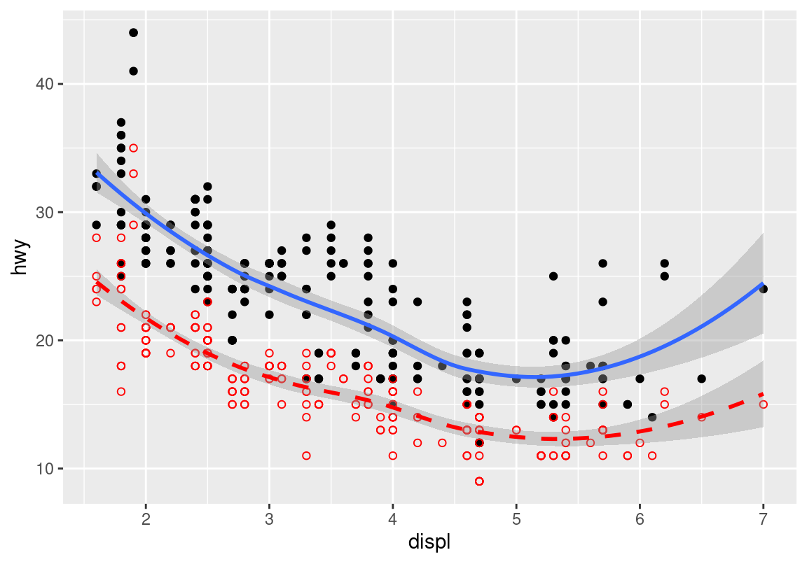
그리고 bins 또는 binwidth 인수를 사용하면 구간의 수 또는 구간의 길이를 직접 지정하여 히스토그램을 그릴 수 있다.


stat_bin()은 구간 별 절대 빈도수(count)뿐 아니라 구간의 밀도(density)와 빈도수와 밀도의 최대 값이 1이 되도록 규모를 변환한 ncount와 ndensity 변수도 생성한다. 그러므로 필요에 따라 이 값을 이용하여 히스토그램을 그림 수 있다.
`stat_bin()` using `bins = 30`. Pick better value with `binwidth`.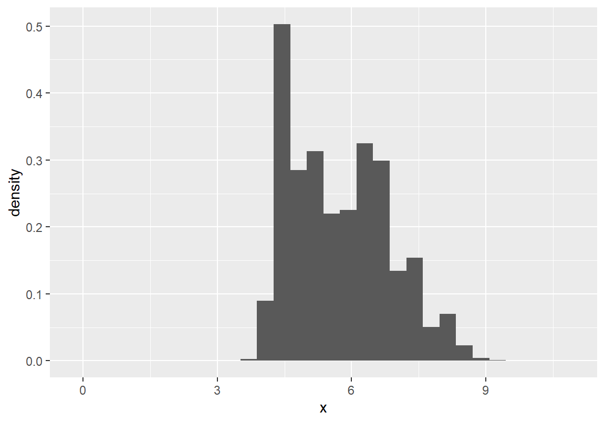
`stat_bin()` using `bins = 30`. Pick better value with `binwidth`.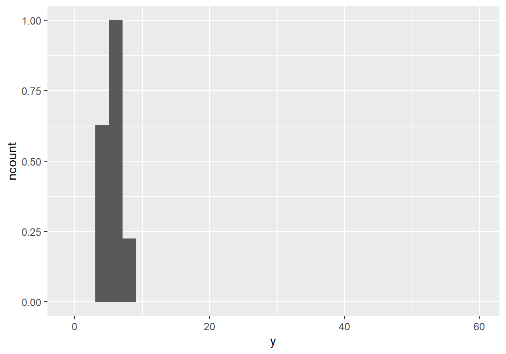
`stat_bin()` using `bins = 30`. Pick better value with `binwidth`.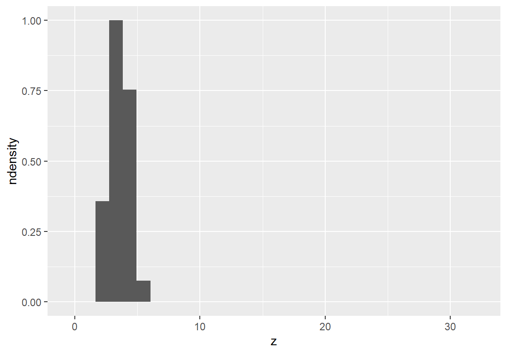
8.6.3 수치형 변수의 범주별 통계요약
다이아몬드의 가격이 가공 품질에 따라 어떤 범위로 움지이는지 살펴보자. 이 때 유용한 geom 함수가 geom_boxplot()이다. geom_boxplot() 함수는 상자그림으로 수치 데이터를 표현한다. 이 함수는 stat로 stat_boxplot()을 디폴트로 사용한다. stat_boxplot()은 x에 매핑된 열의 수준 별로 y에 매핑된 데이터를 모아서 상자그림에 필요한 통계량을 계산한다.
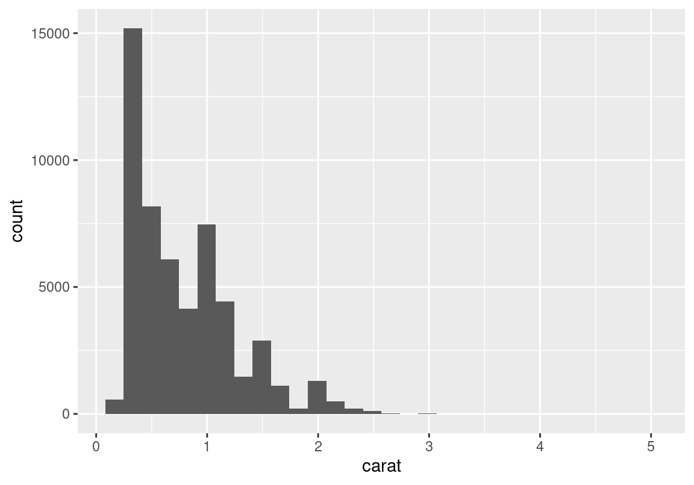
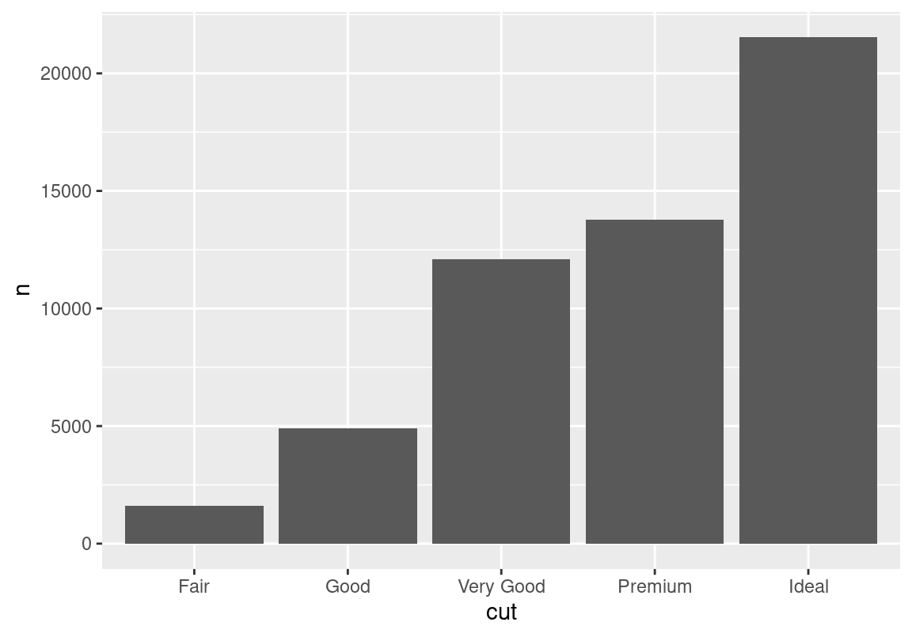
이 외에도 stat_summary()를 이용하면 연속형 변수 데이터를 범주별로 나누어 함수를 적용한 결과를 출력할 수 있다.
> ggplot(diamonds, aes(cut, depth)) +
+ geom_pointrange(stat="summary", fun.y=median, fun.ymax=max, fun.ymin=min)Warning: Ignoring unknown parameters: fun.y, fun.ymax, fun.yminNo summary function supplied, defaulting to `mean_se()`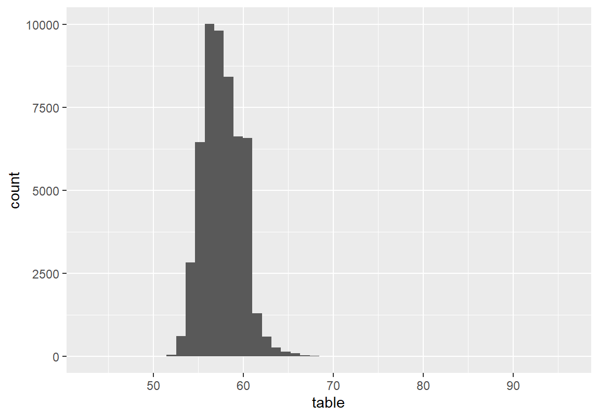
8.7 위치 조정
geom_bar()는 막대의 색상과 관련된 fill, color, alpha라는 속성이 있는데, 각각 막대의 색, 막대 테두리 색, 막대 색의 투명도를 조정한다.
다음은 mpg 데이터에서 class별 빈도를 막대 그래프로 그린 예이다. fill 속성 인수에 남색을 부여하였다.
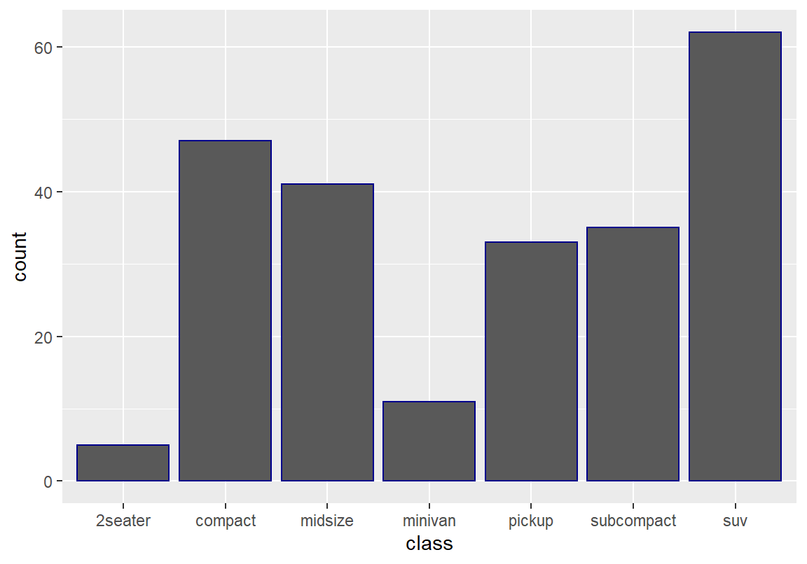
앞의 막대 그래프는 class별로 데이터의 빈도를 구해 한 색상으로 막대를 그렸다. 이번에는 class 별 빈도에 대한 막대 그래프를 그리는데 fill 속성에 drv 열을 매핑하여 어떤 차이가 있는지 살펴보자.
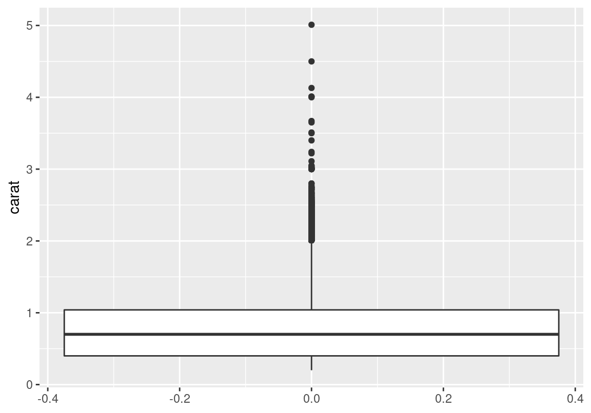
fill 속성에 drv라는 이산 변수가 매핑되자, 동일한 class 값이지만 서로 다른 drv의 값을 가지는 경우를 구분하여 다른 색상으로 막대를 그렸다. 그리고 동일한 class인데 drv 값이 다른 막대를 동일한 가록축에 층(stack)으로 쌓아 올렸다. 예를 들어 subcompact 클래스의 경우 drv가 4, f, r이 모두 있으므로 총 3개의 막대가 그려져야 한다. 그러나 이 3 막대는 모두 동일한 x 값을 가지므로 서로 겹치는 것을 피하기 위하여 쌓아 표현하였다.
geom 함수에서 position 인수는 동일한 위치의 도형 객체를 어떻게 조화롭게 표현할지를 결정한다. 앞의 예에서는 geom_bar()의 position 인수의 디폴트 값은 "stack"이므로 같은 x 위치의 막대를 쌓아 표현하였다. 만약 같은 위치의 막대를 쌓아 표현하지 않고 옆으로 나란히 세워 표현하고 싶으면 postion 인수를 "dodge"로 설정한다.
geom 함수에 따라 취할 수 있는 position 인수의 값은 다를 수 있다. geom_bar()의 경우 "stack", "dodge", "fill" 그리고 "identity" 값을 가질 수 있다. (여기서 "fill"과 "identity"는 막대의 fill 속성이나 통계 요약 함수인 stat_identity()와는 상관없는 동일 위치의 도형의 위치 조정에 관한 값이다.) position인수가 "fill"이면, 막대의 전체 길이가 1이 되도록 조정하여 동일한 x의 값에서의 상대적 비율을 파악할 수 있게 해준다.
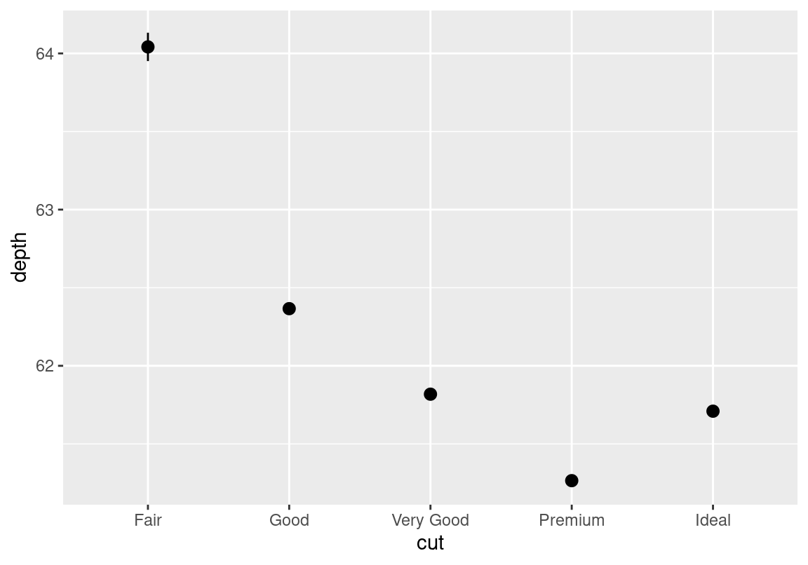
position이 "identity"로 설정되면 동일한 위치에 겹쳐지는 geom 객체에 아무 조정도 하지 않는다. 앞과 동일한 예에서 position="identity"로 설정해 보자. 모두 동일한 자리에 그려지므로 아래 그려진 막대가 가려지므로 막대의 윤곽선만 그리고 투명도를 조정하여 겹쳐진 막대를 확인할 수 있도록 하자.
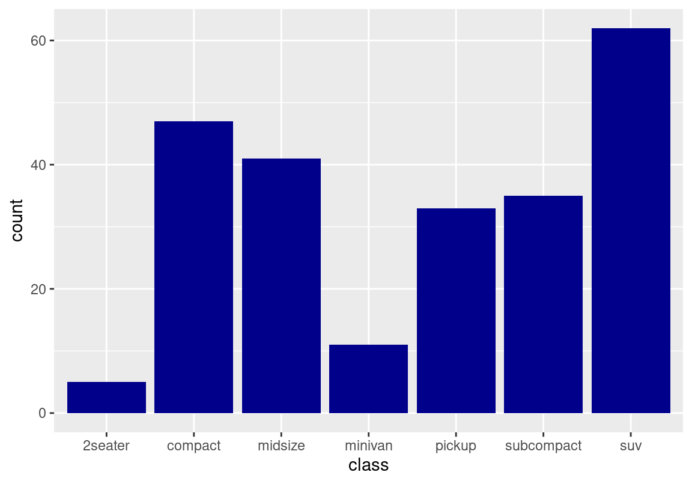
사실 "identity" position은 막대 그래프에서 별로 유용한 조정 방법이 아니다. 그러나 geom_frepoly() 등 빈도를 선으로 표현하는 geom 객체에는 매우 유용하다.
`stat_bin()` using `bins = 30`. Pick better value with `binwidth`.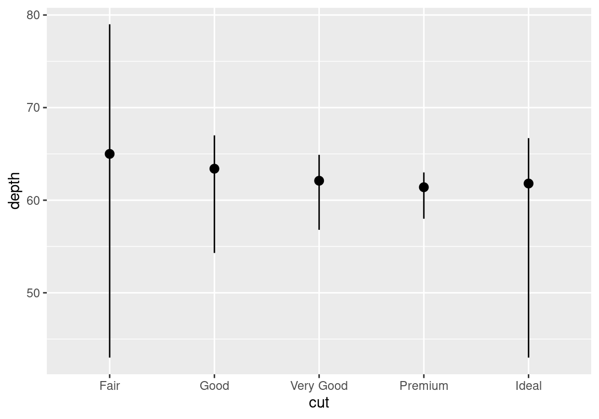
사실 geom_freqpoly()는 "identity"를 position의 디폴트 값으로 가지므로 다음 명령어도 동일한 결과를 준다.
8.8 ggplot2 그래프의 종류
이 절에서는 ggplot2에서 그릴 수 있는 대표적인 그래프 종류를 하나씩 살펴본다.
그래프는 결국 데이터를 시각적 객체로 변환한 것이므로 그래프의 종류는 그래프가 어떤 geom 객체를 이용하는가에 따라 나눠 볼 수 있다. Table 8.1에는 그래프에서 자주 사용되는 geom 함수들이 제시되어 있다.
| 함수 | 도형 | 도형의.속성 |
|---|---|---|
| geom_bar() | Bar chart | color, fill, alpha |
| geom_boxplot() | Box plot | color, fill, alpha, notch, width |
| geom_density() | Density plot | color, fill, alpha, linetype |
| geom_histogram() | Histogram | color, fill, alpha, linetype, binwidth |
| geom_hline() | Horizontal lines | color, alpha, linetype, size |
| geom_jitter() | Jittered points | color, size, alpha, shape |
| geom_line() | Line graph | color, alpha, linetype, size |
| geom_point() | Scatterplot | color, alpha, shape, size |
| geom_rug() | Rug plot | color, side |
| geom_smooth() | Fitted line | method, formula, color, fill, linetype, size |
| geom_text() | Text annotations | 많은 옵션이 있으므로 도움말 참조 |
| geom_violin() | Violin plot | color, fill, alpha, linetype |
| geom_vline() | Vertical lines | color, alpha, linetype, size |
한편 그래프는 데이터에 대한 시각적 표현이므로 표현하려는 데이터의 형식에 따라 그래프를 구분해 볼 수도 있다. 데이터의 각 변수는 크게 수치형 변수와 범주형 변수로 나누어 볼 수 있다. 앞으로 우리는 그래프에서 표현하려는 데이터가 무엇인지에 따라 다음처럼 그래프를 분류하여 살펴보고자 한다.
- 하나의 범주형 변수를 나타내는 그래프
- 하나의 수치형 변수를 나타내는 그래프
- 두 개의 범주형 변수의 관계를 나타내는 그래프
- 하나의 범주형 변수와 하나의 수치형 변수의 관계를 나타내는 그래프
- 두 개의 수치형 변수의 관계를 나타내는 그래프
- 세 개 이상의 변수의 관계를 나타내는 그래프
이를 각각 살펴보기에 앞서 그래프에 단순한 선과 도형을 표현하는 기본 함수를 먼저 살펴보자.
8.8.1 기본 그래픽 함수
기본 그래픽 함수를 살펴보기 위해 mpg 데이터에 대한 도심 연비와 고속도로 연비를 나타내는 산점도 그래프를 고려해 보자.
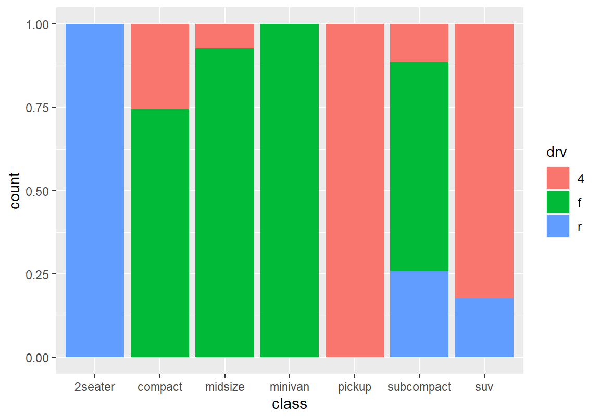
앞의 산점도에 도심 연비와 고속도로 연비의 평균을 나타내보자.
ggplot2에서는 수평선은 geom_hline(), 수직선은 geom_vline() 함수로 그릴 수 있다. 다음은 geom_vline()으로 도심연비의 평균선을 나타낸 예이다. xintercept는 수직선이 지나가는 x축의 절편의 값이다. linetype 인수는 선의 종류를 결정하는 인수인데, 1은 실선, 2는 파선을 나타낸다. 이 외에도 다양한 linetype을 설정할 수 있으니 자세한 내용은 ??linetype을 이용하여 관련된 설명을 확인해 보길 바란다.

다음으로 geom_hline()으로 고속도로 연비의 평균선을 그려보자. yintercept는 수평선이 지나가는 y 절편의 값이다.
> p1 <- p + geom_vline(xintercept = mean(mpg$cty), linetype=2, color="red") +
+ geom_hline(yintercept = mean(mpg$hwy), linetype=2, color="red")
> p1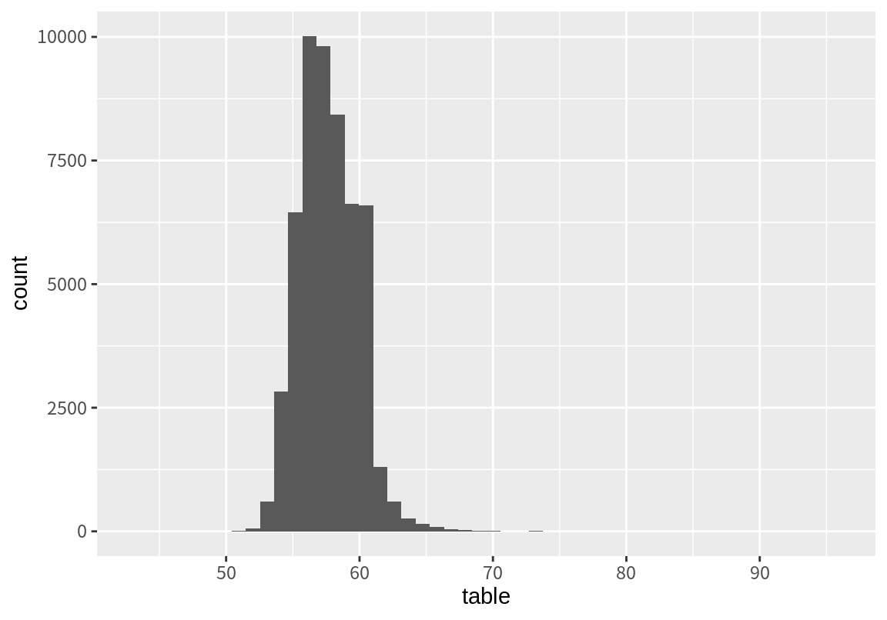
이렇게 그려 놓고 보면, 도심 및 고속도로 연비가 모두 평균 이상인 그룹과 어느 하나만 평균 이상인 그룹, 둘 다 평균 이하인 그룹을 구분해 볼 수 있다.
도심 연비와 고속도로 연비의 비율을 알기 위하여 기울기가 1이고 절편이 0인 직선을 그려보자. geom_abline()은 절편이 a, 기울기가 b인 직선을 그래프에 그려준다. 결과에서 확인하듯이 모든 차들이 도심 연비에 비해 고속도로 연비가 좋음을 확인할 수 있다. 아울러 두 연비의 비를 알아볼 수 있도록 scale 함수를 이용하여 좌표축의 범위를 동일하게 설정하였다(8.9 장 참조).
> p1 + geom_abline(a=0, b=1, linetype=3, color="blue") +
+ scale_x_continuous(limits = c(0, 45)) +
+ scale_y_continuous(limits = c(0, 45))Warning: Ignoring unknown parameters: a, b8.8.2 한 범주형 변수의 그래프
우리는 이미 geom_bar()를 이용하여 하나의 범주형 변수의 빈도에 대한 막대 그래프를 그리는 법을 보았다. 여기서는 범주형 변수의 막대 그래프 표현에 대하여 좀 더 자세히 살펴본다.
먼저 범주형 변수가 무엇인지 살펴보자. 범주형 변수란 변수의 값이 몇 개의 정해진 범주로 한정되는 변수라고 할 수 있다. 예를 들어 gender라는 변수가 어떤 수업의 수강생의 성별 정보를 표현하고 있다면, 남자 또는 여자라는 두 가지 범주에 의해서 데이터가 표현될 것이다. mpg의 class 열은 연비가 조사된 자동차의 종류를 compact, midsize, suv, 2seater, minivan, pickup, subcompact라는 7 가지 값으로 표현하는 변수이다. 다음 명령을 실행해 데이터를 확인해 보자.
[1] "compact" "midsize" "suv" "2seater" "minivan"
[6] "pickup" "subcompact"ggplot2에서는 geom_bar() 함수를 이용하여 다음 형식 중 하나를 선택하여 막대 그래프를 그린다.
> ggplot(data=데이터, mapping=aes(x=범주형.변수.이름)) + geom_bar()
> ggplot(데이터, aes(범주형.변수.이름)) + geom_bar()
> ggplot(데이터) + geom_bar(aes(범주형.변수.이름))
> ggplot() + geom_bar(aes(범주형.변수.이름), 데이터)geom_bar() 함수는 x에 매핑된 변수를 범주형 변수로 간주하고, 해당 변수에서 구분되는 값을 범주로 뽑아낸 후, 범주 별로 빈도수 계산한 후 이를 막대 그래프로 그려준다. (빈도수를 계산하는 과정은 사실 stat_count() 함수가 수행한다.) class 변수는 7가지의 구분되는 값으로 구성되어 있다. 문자열로 표현되는 범주는 알파벳 순으로 정렬되어 그래프의 가록축에 표현된다. 다음은 mpg 데이터의 class 열에 대한 막대 그래프를 그린 예이다.
mpg 데이터이 cyl 열은 수치로 표현되어 있지만 사실은 실린더 개수이므로 4, 6, 8, 5라는 4 개의 범주를 가진 범주형 변수이다. geom_bar()를 이용하면 이 범주로 이용하여 빈도수를 계산한 후 막대 그래프로 그릴 수 있다. 범주가 수치인 경우에는 수의 크기로 정렬하여 가로축을 생성한다.
수치형 변수도 구별되는 값의 개수가 많지 않으면 geom_bar()를 이용할 수 있다. 예를 들어 도심 연비를 나타내는 cty는 다음처럼 총 21 개의 값을 가지고 있다. 그러므로 geom_bar()를 이용하여 각 값 별로 데이터의 빈도를 세어 막대 그래프를 그릴 수 있다.
[1] 18 21 20 16 19 15 17 14 11 13 12 22 9 28 24 25 23 26 33 35 29이 경우는 cty 변수에 구별되는 값이 많지 않아 막대 그래프로 표현해도 크게 어색하지 않다. 그러나 대부분의 수치형 변수는 연속적인 값을 가지므로 이런 식으로 막대 그래프를 그리기가 어렵다. 따라서 수치형 변수의 경우 geom_histogram()을 이용하여 구간으로 나누어 구간별 빈도에 대한 막대 그래프를 그리는 것이 좋다.
막대 그래프를 그릴 때 그래프의 x-축에 표현되는 범주의 순서를 바꾸고 싶을 때가 있다. 예를 들어 다음같은 drv에 대한 막대 그래프를 f, r, 4 순으로 막대를 표현하고 싶다고 하자.
geom_bar()는 기본적으로 문자는 알파벳 순으로 숫자는 숫자의 크기 순으로 정렬하여 막대를 그리므로 이를 바꾸고 싶으면 요인(factor)로 바꾸어야 한다. 요인의 경우는 수준(levels)에 정의된 순서에 따라 막대 그래프를 그리기 때문이다. 마지막의 labs() 함수는 x-축의 레이블을 "drv"로 표시하기 위해 사용되었다. 이 함구가 없으면 x-축 레이블이 어떻게 변하는지 확인해 보라.
다음 예는 mpg의 class 데이터에서 빈도가 큰 범주부터 차례로 막대가 나오도록 하는 예이다.
2seater compact midsize minivan pickup subcompact suv
5 47 41 11 33 35 62 [1] "suv" "compact" "midsize" "subcompact" "pickup"
[6] "minivan" "2seater" 범주형 데이터를 막대로 그릴 때, 각 범주별 데이터를 다른 변수로 좀 더 세분화하여 살펴보고 싶을 때가 있다. 이 경우 흔히 한 범주를 표현하는 막대를 다른 변수의 범주에 따라 색상으로 구분하여 세분화하여 표현한다. geom_bar()의 fill aesthetics에 범주형 변수를 매핑하면 각 범주별로 색상을 달리 표시한다. 다음은 class별 막대 그래프를 년도(year)로 더 세분화하여 표현한 경우이다. mpg 데이터의 year 변수는 수치형 데이터로 표현되어 있으므로 factor() 함수를 이용하여 이산형으로 변형하여 `fill`` aesthetics에 매핑하였다.
만약 각 class 값에 따라 1999년도와 2008년도의 상대적 빈도를 비교해 보고 싶다면, 다음처럼 position 인수를 "fill"로 설정하면 된다. postion 인수에 대한 자세한 설명은 8.7 절을 참조하기 바란다. 이렇게 하면 막대 그래프를 이용하여 두 범주형 변수의 관계를 살펴볼 수 있다.

8.8.3 한 수치형 변수의 그래프
한 수치형 변수에서 일차적으로 확인해야 할 내용은 그 변수의 분포이다. 분포를 확인하는 가장 단순한 방법은 수치를 구간으로 나누어 빈도를 나타내는 히스토그램을 그려보는 것이다. geom_histogram() 함수는 x로 매핑된 변수를 구간으로 나누어 빈도수를 구한 후 - 이 작업은 stat_bin() 함수가 수행한다 - 막대 형태의 히스토그램 그래프를 그려준다. 다음은 고속도로 연비 데이터를 구간 크기를 2로하여 나눈 후 히스토그램을 그린 예이다. 구간의 길이는 bandwidth 인수를 이용하여 설정한다.
히그토그램은 구간의 크기에 따라 다른 모양의 그래프가 나오므로, 구간의 크기를 변화시키면서 분포를 가장 적절하게 나타내는 구간크기를 찾아 보아야 한다.
그런데 앞의 고속도로 연비 히스토그램을 보면 두 개의 봉우리를 가지는 분포를 보인다. 이처럼 분포에 여러 봉우리가 나타날 때는 서로 다른 특성을 가지는 데이터 그룹이 하나로 섞여 있기 때문인 경우가 많다. 예를 들어 성인의 키의 분포를 그리면 남자와 여자라는 서로 다른 특성의 그룹 때문에 쌍봉 형태의 그래프가 나온다.
고속도로 연비가 쌍봉 형태를 보이는 것이 자동차의 구동 방식 때문인지를 한번 살펴보자. 다음처럼 fill aesthetics에 drv 변수를 매핑하면 빈도를 drv 요소로 분해하여 살펴볼 수 있다. 결과에서 보듯이 왼쪽 봉우리는 주로 4륜 구동(4) 차가, 오른쪽 봉우리는 전륜 구동(f) 차가 분포의 대부분을 차지하고 있음을 볼 수 있다.
그런데 앞의 예에서 geom_histogram()은 디폴트 position이 "stack"으로 설정되어 있어서 쌓인 형태로 막대 그래프가 나타났다. 쌓인 그래프 형태로 표현되다 보니 각 구동방식에 따른 고속도로 연비의 분포를 파악하기는 어렵다. 이런 경우 geom_freqpoly()를 이용하여 각 범주별 분포를 분리하여 그려보면 좋다. geom_freqpoly()는 geom_histogram()과 마찬가지로 연속형 수치 변수를 구간으로 나누어 빈도를 보여주는데, 막대가 아니라 선을 이용하여 빈도를 보여준다.
따라서 여러 그룹으로 나누어 구간으로 나누어 빈도를 보일 때도 서로 구분이 용이하다. geom_freqpoly()의 디폴트 position은 "identity"이다. 아래 그래프를 보면 4륜 구동과 전륜 구동의 분포에 의해 전체 분포에서 쌍봉이 나타났음을 뚜렷하게 확인할 수 있다.
그런데 위의 그래프는 구동방식에 따라 구간별 고속도로 연비의 절대빈도를 보여준다. 따라서 데이터 수가 적은 후륜 구동(r)의 경우 매우 작게 표시되어 상대적인 분포를 확인하기 어렵다. 이런 경우 전체 면적을 1로하는 상대빈도를 이용하여 그래프를 나타내는 것이 더 좋다. geom_histogram()과 geom_freqpoly() 모두 디필트 stat로 stat_bin()을 이용하는데, 이 함수는 x로 매핑된 변수를 구간으로 나누어 구간별 빈도(count), 밀도(density), 최대값이 1로 조정된 빈도(ncount), 최대값이 1로 조정된 밀도(ndensity) 등을 산출한다. 특별한 지시가 없으면 stat_bin()은 count 변수를 y로 매핑하여 준다. 그리고 이 y 값을 geom_histogram()에서는 막대의 높이로, geom_freqpoly()에서는 선의 y 값으로 이용한다. count 대신 density를 이용하여 그래프를 그리고 싶으면, aes() 매핑에서 y가 density가 되도록 매핑하면 된다. 단, 이 때 stat 함수에 의해 계산된 변수는 ..<변수이름>.. 형태로 표시한다.
4륜 구동 차는 15에서 20사이의 구간에서 가장 많은 빈도를 보였고, 후륜구동 차는 15에서 30 사이로 펴져서 분포를 하고 있고, 전륜구동 차는 25에서 30에서 가장 많은 빈도를 보이는 것을 확인할 수 있다.
8.8.4 두 범주형 변수의 그래프
두 범주형 변수의 관계는 8.8.2 절에서 본 것과 같이 한 범주형 변수의 막대 그래프에 fill aesthetics에 다른 범주형 변수를 매핑하여 두 변수의 관계를 살펴보거나, 아니면 다음처럼 facet을 이용하여 한 범주형 변수의 값을 고정시켜 놓고 다른 범주형 변수에 대해 막대 그래프를 그려 두 변수의 관계를 살펴본다.
이 경우 절대빈도로 막대 그래프가 표시되어 facet에 지정된 변수의 값에 따라 분포가 다른지 비교하기가 어렵다. geom_bar()의 디폴트 stat인 stat_count()는 x로 매핑된 변수에 대해 범주별로 빈도수를 세어 count 변수에 저장하고, 상대빈도를 prop 변수에 저장한다. stat_count()는 디폴트로 count 변수의 값을 y에 매핑한다. 만약 prop 변수를 막대 그래프의 y의 값으로 매핑하려면, y를 ..prop..으로 지정한다. (8.8.3 절에서 설명한 바와 같이 stat 함수가 생성한 변수의 지정은 ..<변수 이름>..의 형식을 사용한다.) 그러면 각 범주별 상대 빈도가 나타나 facet으로 지정된 변수의 값에 따라 상대적 비율이 달라지는지 비교해 볼 수 있다.
두 범주형 변수의 관계를 살펴보는 또 다른 방법은 두 범주형 변수의 데이터를 산점도로 표시해 보는 것이다.

그런데, 문제는 같은 값을 갖는 데이터가 너무 많으므로 여러 데이터가 한 점으로 표시되어 빈도를 알 수 없다. 이 경우 geom_jitter()를 사용하면 각 점의 x, y 좌표에 임의의 변동을 주어 겹치는 점이 다른 곳에 표시되도록 할 수 있다. width와 height 인수는 임의의 변동의 최대값이다. 범주형 변수의 범주 사이의 길이는 1이므로 다음의 예는 붙어 있는 두 범주 사이의 거리의 약 \(\pm\) 20% 정도의 변동이 일어나도록 조정한 예라 할 수 있다.
그러나 산저도의 점의 수가 많으면 두 변수의 관계를 명확하게 알기는 힘들다. 이 경우 geom_count()를 이용하면 빈도에 따라 더 큰 원이 그려지는 그래프를 그릴 수 있다.
8.8.5 범주형 변수와 수치형 변수의 그래프
범주형 변수와 수치형 변수의 관계를 살펴보는 가장 쉬운 방법은 범주형 변수에 따른 수치형 변수의 분포를 산점도로 나타내 보는 것이다. 다음은 클래스별 도심 연비의 산점도를 보여준다. 비슷한 데이터와 매핑으로 그래프를 여러번 그릴 것이므로 ggplot2 그래프를 변수에 할당하여 사용해 보자.
그런데 실제 데이터보다 점이 더 적게 찍힌 것을 볼 수 있다. 이는 동일한 지점에 여러 데이터가 표현되었기 때문이다.geom_jitter() 함수는 앞서 설명하였드시 동일한 지점의 점을 임의로 조금씩 변동시켜 점을 표시한다. width와 height 인수를 설정하면 임의의 변동의 폭과 높이의 범위를 설정할 수 있다. 다음은 폭을 \(\pm 0.2\)로 제한한 경우이다. 이산시간 변수는 한 칸이 1로 계산되므로 총 공간의 40% 정도에 임의로 변동된 점이 놓이게 된다.
geom_jitter()로 범주별로 수치 변수의 대락적 분포를 확인할 수는 있으나 전체적인 분포를 요약하여 비교하긴 어렵다. geom_boxplot()를 이용하면 각 범주에서의 수치형 변수의 분포를 상자 그림으로 요약하여 보여준다. 상자의 상한은 3분위수, 상자의 하한은 1분위수, 상자 안의 가로선은 중위수를 나타낸다. 상자 밖의 위와 아래에 그려진 선은 상자 높이(IQR)의 1.5배 내의 데이터 중 최대값과 최소값을 보여준다. 그 범위 밖의 데이터는 이상치로 간주하여 별도의 점으로 나타낸다.
앞의 그래프는 자동차 종류 별로 도심 연비의 중위수가 차이가 나는지를 살펴볼 수 있게 해준다. 그런데, 그래프에 나타난 중위수는 조사된 데이터, 즉 표본의 중위수이므로 모집단의 중위수와 다를 수 있다. 모집단 중위수에 대한 신뢰구간을 같이 표시하고 싶으면 notch=TRUE로 하여 상자그림을 그린다. 만약 두 종류의 차의 V자 모양의 notch가 서로 겹치지 않는다면 두 종류의 차의 도심 연비의 중위수가 통계적으로 유의미하게 다르다는 것을 의미한다. 데이터가 적은 클래스의 경우에 notch의 크기가 너무 커져서 상자 바깥까지 그려지는 경우도 있다. 이 경우 경고 메시지가 출력된다.
notch went outside hinges. Try setting notch=FALSE.
notch went outside hinges. Try setting notch=FALSE.
notch went outside hinges. Try setting notch=FALSE.상자 그래프 자주 같이 표시되는 정보가 수치 데이터의 평균에 대한 정보이다. stat_summary()를 이용하면 범주별 평균을 구할 수 있고, geom_point()로 범주별 평균을 상자 그림 위에 덧붙일 수 있다.
> p + geom_boxplot(notch = T) +
+ geom_point(stat="summary", fun.y=mean, color="red", size=5, shape="*")Warning: Ignoring unknown parameters: fun.yNo summary function supplied, defaulting to `mean_se()`notch went outside hinges. Try setting notch=FALSE.
notch went outside hinges. Try setting notch=FALSE.
notch went outside hinges. Try setting notch=FALSE.상자 그래프는 수치형 데이터를 분위수와 이상치로 요약된 정보를 주는 장점이 있지만 실제 분포를 파악하기 어렵다. 바이올린 차트는 상자 그래프의 이러한 단점을 보완해 준다. 바이롤린 차트는 수치 변수의 확률밀도를 추정하여 확률밀도가 높은 곳은 폭이 넓게, 확률밀도가 낮은 곳은 폭이 좁게 그래프를 그려주는데, 이 모향이 바이올린 모양을 닯아서 바이올린 차트라 한다.
그런데 바이올린 차트는 확률밀도를 계산할 때 확률밀도가 연속적이고 유한한 값을 가지는 함수라는 가정하에 각 지점에 작은 정규분포를 적합하여 이를 연결하여 확률밀도를 추정한다. 그런데 이런 가정이 적합하지 않을 때도 있으니 이 경우 바이올린 차트를 사용하지 않는 것이 좋다.
다음은 바이올린 차트와 상자그림을 겹쳐 그린 그래프이다.
8.8.6 두 수치형 변수의 그래프
우리는 앞선 여러 예제에서 geom_point()를 이용하여 두 수치형 변수의 산점도와 geom_smooth()를 이용하여 평균 적합선을 그려보았다. 여기서는 다른 방식으로 두 수치형 변수의 관계를 그래프로 나나태 보자.
geom_text()
두 수치형 변수의 데이터를 나타낼 때, 점 대신 텍스트로 표현하고 싶을 때가 있다. 다음 예는 geom_text()로 midsize 차의 2008년도의 도심 및 고속도로 연비 데이터를 모델명으로 보여주는 그래프이다.
> df <- mpg[mpg$class == "midsize" & mpg$year==2008,]
> ggplot(df, aes(cty, hwy)) + geom_text(aes(label=model))앞의 예는 동일한 데이터를 가지는 차의 이름이 겹쳐서 표현되어 구분이 어렵다. 이를 개선하기 위하여 글자의 크기(size 인수)를 줄이고 다음처럼 position 인수에 position_jitter() 함수를 이용하여 텍스트 위치에 임의적인 변동을 주어 같은 자리의 데이터가 겹치지 않도록 해 본다.
> ggplot(df, aes(cty, hwy)) +
+ geom_text(aes(label=model), size=3,
+ position=position_jitter(width=0.3, height=0.3))텍스트를 겹치지 않게 만드는 또다른 방법은 check_overlap=TRUE로 설정하여 이미 한 자리에 텍스트가 놓이면 같은 위치에 텍스트가 더 이상 쓰이지 않도록 하는 것이다. 이 경우 뒤에 나타나는 동일한 위치의 데이터는 그래프에 표시되지 못할 것이다.
텍스트로 관측치의 위치를 표현하면, 텍스트의 길이가 가변적이라 관측치의 정확한 위치를 파악하기 어렵다. 따라서 관측치의 위치는 점으로 표현한 후, 점의 옆이나 위, 아래에 텍스트를 같이 표현하기도 한다. geom_text() 함수의 nudge_x와 nudge_y는 원래 관측치의 위치에서 정해진 크기만큼 표시할 텍스트의 위치를 이동시킨다. 다음은 텍스트를 점 위로 0.3 정도 이동시켜 표시한 예이다.
위의 경우에는 동일한 위치에 여러 텍스트가 겹치므로 position_jitter()를 이용하여 임의로 위치로 텍스트를 조정할 수도 있다. 참고로 position_jitter()와 nudge_x/nudge_y`는 함께 사용될 수 없다.
geom_label()
geom_label()은 geom_text()와 거의 유사한데, 텍스트를 박스 안에 넣어 글자를 구별하기 좀 더 쉽도록 해 준다.
8.8.7 세 변수 이상의 그래프
3개 변수 이상의 관계를 파악하고자 할 때 조건부 그래프이다. 조건부 그래프는 관심의 대상인 한 변수의 분포 또는 두 변수의 관계가 다른 변수의 값이 변함에 따라 어떻게 변하는지를 보여준다. ggplot2에서는 facet을 사용하여 이를 수행한다.
다음은 구동 방식(drv)의 차이에 따라 배기량(displ)과 도심 연비(cty)의 관계가 어떻게 변하는지를 보여주는 그래프이다. 전륜 구동(f)의 차일수록 배기량이 커짐에 따라 도심 연비의 감쇄가 크게 나타남을 볼수 있다.
`geom_smooth()` using formula 'y ~ x'
위에서 사용된 facet_wrap() 함수는 그래프가 매우 많으면 그래프를 줄 바꾸기를 하여 배치를 한다.
`geom_smooth()` using formula 'y ~ x'3개 변수 이상의 관계를 파악할 때 조건부 그래프뿐 아니라, 산점도 상에서 색상 등의 다른 aethetics를 사용하여 제 3의 변수의 영향을 살펴볼 수도 있다. 다음은 구동 방식의 차이를 색상으로 구분하여 한 산점도에 나타낸 예이다.
`geom_smooth()` using formula 'y ~ x'
색상 등의 aesthetics를 제 3의 변수에 매핑하여 그래프를 그리는 것은 한 그래프에 그래프가 모두 함께 표시되어 비교가 쉬운 장점이 있다. 그러나 제 3의 변수가 여러 값을 가지거나 제3, 4, 5의 변수들이 관심있는 두 변수에 영향을 미치는 것을 살펴보려면 너무 그래프가 복잡해서 파악이 어려운 단점이 있다. 다음은 구동방식뿐 아니라 조사 년도(year)가 배기량과 도심 연비의 관계에 어떤 영향을 미치는지 보기 위해 추가적으로 year 변수를 linetype에 매핑한 결과이다. 여러 그래프가 한 곳에 그려지다 보니 구분이 어려운 것을 볼 수 있다. 또한 연도별로 구동방식으로 나누어 비교를 하기도 어렵다.
> ggplot(mpg, aes(displ, cty, col=drv, linetype=factor(year))) +
+ geom_point() + geom_smooth(method="lm") + labs(linetype="year")`geom_smooth()` using formula 'y ~ x'
facet을 사용하면 제3, 4 변수의 값에 따라 그래프 각각 그린 후 행과 열로 배치해 주므로 그래프를 좀 더 체계적으로 비교해 볼 수 있다. 다음은 drv와 year의 값에 따라 displ와 cty의 관계가 어떻게 변하는지는 facet을 이용하여 그래프를 그린 예이다. facet_grid()은 수식 표현을 사용하여 그래프 배열의 행과 열의 기준이 되는 변수를 지정한다.
`geom_smooth()` using formula 'y ~ x'facet_wrap()이 한 변수를 조건으로 하여 그래프를 그린다면 facet_grid()는 두 변수를 조건으로 그래프를 그려준다. 행이 될 변수를 수식의 왼편에 열이 될 변수를 수식의 오른편에 기술을 한다. 앞의 예에서는 조사 년도별 차이는 행으로, 구동 방식의 차이는 열로 구분되어 그래프를 표시하였다. 전륜 구동(f)의 차들의 연비 감쇄 현상이 더 가파른 것은 연도별로 차이가 없었지만, 1999년도에 비해 2008년도의 전륜구동(f)과 후륜구동(r)의 차들 중에 배기량이 큰 차들이 출시되었고 배기량에 따른 연비 감쇄 경향도 줄어들었음을 볼 수 있다.
8.9 그래프의 외양 바꾸기
ggplot2는 사용자가 데이터를 geom의 각 aesthetics 요소로 매핑하면 자동으로 가로축과 세로축의 스케일을 결정하고, 표시할 색상의 스케일도 결정하고, 축과 범례에 표시될 레이블도 결정하여 그래프를 그려준다. 이러한 ggplot2의 기능은 사용자가 그래프의 세부 사항이 아니라 그래프의 핵심적인 매핑과 형태에만 집중할 수 있게 해주므로 매우 편리하다. 그러나 가끔은 ggplot2가 생성한 그래프의 모양이 최종적으로 원하는 형태가 아닐 수 있다. 이러한 경우에 그래프의 세부적인 사항을 조정할 필요가 있다. 사실 발표용 그래프는 세심한 조정이 필요한 경우가 더 많다. 이 장에서는 ggplot2로 그래프를 그린 후 자주 조정하게 되는 요소를 어떻게 변경할 수 있는지를 살펴본다.
8.9.1 좌표축의 조정
ggplot2는 데이터가 x와 y aesthetics에 매핑되면, 이를 이용하여 가로축과 세로축의 축척(scale)를 생성한다. x와 y에 매핑된 변수가 수치형 변수이면 scale_x_continous()와 scale_y_continous()가, 범주형 변수이면 scale_x_discrete()와 scale_y_discrete()가 사용되어 가로축과 세로축의 축척을 생성한다.
좌표축의 축적을 위한 이러한 함수들은 매핑된 데이터의 값을 이용하여 다음 사항을 적절히 결정한다.
- name: 축의 이름
- breaks: 축에 표시될 눈금의 위치
- labels: 축 눈금에 씌여질 레이블
- lmites: 축의 상한과 하한
- trans: 축에 별도의 변환을 적용할지 여부
- position: 축의 그래프 상에서의 위치 등
ggplot2가 자동으로 설정한 이러한 요소가 원하는 것이 아니라면 직접 이를 조정해야 한다.
midwest 데이터는 미국 중서부의 각 카운티(county)의 인구통계 정보이다.
# A tibble: 437 x 28
PID county state area poptotal popdensity popwhite popblack popamerindian
<int> <chr> <chr> <dbl> <int> <dbl> <int> <int> <int>
1 561 ADAMS IL 0.052 66090 1271. 63917 1702 98
2 562 ALEXA~ IL 0.014 10626 759 7054 3496 19
3 563 BOND IL 0.022 14991 681. 14477 429 35
4 564 BOONE IL 0.017 30806 1812. 29344 127 46
5 565 BROWN IL 0.018 5836 324. 5264 547 14
6 566 BUREAU IL 0.05 35688 714. 35157 50 65
7 567 CALHO~ IL 0.017 5322 313. 5298 1 8
8 568 CARRO~ IL 0.027 16805 622. 16519 111 30
9 569 CASS IL 0.024 13437 560. 13384 16 8
10 570 CHAMP~ IL 0.058 173025 2983. 146506 16559 331
# ... with 427 more rows, and 19 more variables: popasian <int>,
# popother <int>, percwhite <dbl>, percblack <dbl>, percamerindan <dbl>,
# percasian <dbl>, percother <dbl>, popadults <int>, perchsd <dbl>,
# percollege <dbl>, percprof <dbl>, poppovertyknown <int>,
# percpovertyknown <dbl>, percbelowpoverty <dbl>, percchildbelowpovert <dbl>,
# percadultpoverty <dbl>, percelderlypoverty <dbl>, inmetro <int>,
# category <chr>- area: 면적
- poptotal: 총 인수수
- popdensity: 인구밀도
- popwhite: 백인 거주자수
- popblack: 흑인 거주자수
- popamerindian: 인디언 거주자수 popasian: 아시아인 거주자수
- popother: 다른 인종 거주자수
- percwhite, percwhite, percamerindan, percasian, percother: 각 인종의 비율
- popadults: 성인 거주자수
- percollege: 대학 졸업자 비율
- percprof: 전문직 비율
다음은 백인 거주자 비율과 대학 졸업자 비율에 대한 산점도이다.
위의 그래프에서 가로축은 백인의 비율인데 25% 단위로 주눈금(breaks)과 눈금의 값이 레이블(labels)로 표시되어 있다. 아울러 주눈금 사이에 보조 눈금(minor.breaks)이 하나씩 그려져 있고 별도의 레이블은 표시되어 있지 않다. 위의 가록축을 10% 단위로 주눈금을 표시하고 보조눈금은 디폴트 값인 주눈금 사이에 하나의 보조눈금이 그려지도록 그래프를 조정해 보자. 또한 눈금에 표시되는 레이블도 숫자만이 아니라 %가 같이 표시되도록 해 본다.
현재 x와 y 축은 데이터의 최소값과 최대값이 모두 표시될 수 있도록 적절히 그 범위가 설정되어 있다. 그런데 현재 백인의 비율은 대부분 80% 이상이어서 데이터가 서로 구분이 되지 않는다. 따라서 x축을 60에서 100%까지만 표시되도록 조정해 보자. 또한 y축의 이름을 “Percent college educated”로 바꾸어 보자. 이 경우 2개의 관측치가 그래프에 표시되지 않으므로 그에 대한 정보가 함께 출력된다.
> p + scale_x_continuous(breaks=seq(0, 100, by=10), ,
+ labels=paste0(seq(0, 100, by=10),"%"),
+ limits=c(60, 100)) +
+ scale_y_continuous(name="Percent college educated")Warning: Removed 2 rows containing missing values (geom_point).다음은 각 카운티의 면적과 인구의 산점도이다.
`geom_smooth()` using formula 'y ~ x'대부분의 인구가 100만 미만에 몰려 있어서 그래프를 확인하기 어렵다. 이렇듯 한쪽으로 편향된 데이터를 가진 경우 로그 변환을 하면 데이터를 구분하기 좋은 때가 많다. 앞의 그래프의 y축을 로그 축적으로 변경해 보자.
`geom_smooth()` using formula 'y ~ x'가끔은 그래프의 x와 y축을 변경하고 싶을 때가 있다. 산점도의 경우는 x와 y의 매핑을 바꾸면 간단히 축을 서로 바꿀 수 있지만 다음처럼 히스토그램의 가로축과 세로축을 바꾸려면 좀 복잡한 작업이 필요하다.
이럴 때 쉽게 사용할 수 있는 것이 coord_flip() 함수이다.
8.9.2 레이블 조정
labs() 함수는 그래프의 제목, 축 이름, 범례의 이름을 쉽게 바꿀 수 있게 해준다.
위 그래프를 다음처럼 범례 이름, 축의 이름, 그래프의 제목을 바꾸어 보자.
8.9.3 테마 변경
테마는 ggplot2 그래프의 전체적인 외양을 결정한다. 테마는 그래프의 배경 색, 글자 폰트, 격자선 모양, 범례의 위치 등의 그래프의 외양을 결정한다. theme_gray()는 디폴트 테마이며, 다음처럼 테마 함수를 추가하면 관련 테마가 적용된다.

사용자는 테마를 바꾸는 것뿐만 아니라, 현재 적용된 테마에 설정된 각 요소를 theme() 함수를 사용하여 직접 변경할 수 있다. 테마에서 가장 빈번이 변경되는 요소가 범례의 위치이다.
이 외에도 그래프 레이블들의 형태와 백그라운드 색 등 다양한 요소를 조정할 수 있다. 더 자세한 내용을 알고싶으면 ??theme을 이용하여 관련 도움말을 확인하기 바란다. 만약 빈번히 사용되는 테마 요소가 있다면 다음 예처럼 변수에 저장을 해 둔 후, 여러 그래프에 적용시킬 수 있다.
> myTheme <- theme(
+ plot.title=element_text(face="bold.italic", size=16, color="orange", hjust=0.5),
+ panel.background = element_rect(fill="lightyellow", color="green"),
+ legend.position = "top")
> p + myTheme> ggplot(mpg, aes(hwy, fill=drv)) + geom_histogram() +
+ labs(title="A graph with my theme") + myTheme `stat_bin()` using `bins = 30`. Pick better value with `binwidth`.
8.10 기타 유용한 팁들
8.10.1 여러 그래프를 한 도표에 넣기
ggplot2에서 그린 여러 그래프를 한 도표에 넣으려면 gridExtra 패키지의 grid.arrange() 함수를 이용하면 편리하다.
gridExtra 패키지를 사용하려면 먼저 설치를 해야 한다.
그리고 나서 메모리에 적재한다.
다음의 패키지를 부착합니다: 'gridExtra'The following object is masked from 'package:dplyr':
combine다음처럼 4개의 그래프를 ggplot2로 그렸다고 해보자. grid.arrange() 함수는 다양한 방식으로 그래프를 조합하여 하나의 도표를 만들 수 있다.
> p1 <- ggplot(mpg, aes(drv, displ)) + geom_jitter()
> p2 <- ggplot(mpg, aes(drv, displ)) + geom_boxplot()
> p3 <- ggplot(mpg, aes(drv, displ)) + geom_violin()
> grid.arrange(p1, p2, p3, ncol=3)
다음은 arrangeGrob() 함수로 그래프를 묶은 다음 다시 이를 grid.arrange()에 보내 좀더 다양한 레이아웃의 그래프를 그린 예이다.
8.10.2 그래프 저장하기
RStudio 사용자가 R에서 그린 그래프를 저장하려면, RStudio의 [Plot] 패널에서 [Export]-[Save as Image…] 메뉴를 이용하면 된다. 이 메뉴를 사용하면 그래프를 저장할 파일 형식, 위치, 이름, 크기를 지정하여 저장할 수 있다. R 콘솔에서 그래프를 저장하려면 다음처럼 ggsave() 함수를 이용한다.